A complete, evidence-based teardown of eventdesignapp.com — every route, panel, tool, modal, API endpoint, data field, credit rule and administrative surface — written as an implementation brief for building Nozila on React and MySQL.
Nineteen sections and four appendices. Sections 9–13 are the implementation core.
Appendices · A. Complete endpoint index · B. Keyboard & interaction map · C. Credit & feature-gate matrix · D. Third-party dependency register and substitutions
What Event Design App actually is, and what Nozila has to reproduce to compete with it.
Event Design App is a browser-native 3D event-design tool sold to the event rental trade. Its real product is not the 3D viewport — plenty of tools have one — but the chain that runs from a photograph of a real rental item, through a to-scale 3D layout, to an output a client signs off on. Everything in the application serves that chain.
A superficial clone is a Three.js canvas with a furniture palette. That is perhaps 15% of the work. The defensible parts, in descending order of difficulty, are:
| Capability | Why it is hard | Weight |
|---|---|---|
| The AI pipeline | Four distinct asynchronous job types — image→3D mesh, image→photoreal render, floor-plan→wall vectors, photos→navigable 3D venue — each with a third-party provider, a credit charge, idempotency, cancellation, refund-on-failure, polling and history. This is a job-orchestration product wearing a 3D coat. | Very high |
| The Biljax stage builder | Not a parametric box. It models a real modular staging system, derives a bill of materials, and encodes engineering rules — guardrail selection by deck height, cross-bracing every third bay, extra support legs above 36″ stair rise. | High |
| Scale correctness | Two-point floor-plan calibration, Google Maps metres-per-pixel capture, per-item real dimensions, imperial/metric duality. Everything is stored in integer millimetres. Get this wrong and the whole value proposition collapses. | High |
| Table Designer | Generates a full banquet arrangement — table, linen, chairs, and a per-seat place setting of up to eight slotted items — then keeps every clone in sync when the table, chair or layout preset changes. | High |
| The commercial machinery | Three tiers, a metered credit economy with per-action pricing, credit packs with expiry, company seats, shared-vs-individual credit pools, Stripe checkout and portal, manual upgrade approvals, and a cancellation-reason funnel — all administrable from a console. | High |
client routes, of which 6 are public and 3 are administrative
distinct REST endpoints observed in the shipped bundle
surfaces inside the Super Admin Console alone
The production JavaScript is shipped unminified enough to read: route table, Zustand store shape, axios call signatures, request payload keys, feature-gate codes and the entire administrative vocabulary are all directly observable. Almost nothing in this document is inference. Where something is inferred, it is marked as such.
credits_remaining integer cannot express that.Every source used, what it yielded, and the honest limits of the reconstruction.
The instruction for this work was to guess nothing. That is achievable to an unusually high degree here, because the application ships a readable client bundle and publishes a detailed knowledge base. This section records exactly where each class of fact came from, so any statement can be re-checked.
| Source | What it established | Volume |
|---|---|---|
| Production JS bundles go.eventdesignapp.com/assets/* |
Route table, lazy-chunk map, Zustand store defaults, every axios call and its path, request payload keys, feature-gate codes, error strings, analytics event names, the whole admin vocabulary. | 56 files 7.1 MB |
| Compiled CSS index-*.css |
The complete --qiso-* design-token set with literal values, and all 57 component class names. |
150 KB |
| Help centre help.eventdesignapp.com |
Step-by-step procedures for 50 workflows across 9 collections — the authoritative source for interaction order, limits, error copy and troubleshooting. | 50 articles |
| Product walkthrough video Loom, 9 min 37 s, 2174×1080 |
Actual pixel layout of the editor: panel widths, toolbar contents, modal anatomy, the radial context menu, properties-panel composition, the status legend. | 144 frames @ 4 s |
| Live page capture Playwright, 1440×900 |
Current visual state of login, register, guest entry, forgot-password, help centre; confirmed the live theme differs from the CSS default. | 10 pages |
| Marketing site & legal | Pricing, tier naming, credit costs, feature claims, corporate entity, governing law, IP-ownership terms. | 7 pages |
| Knowledge-base screenshots | Exact modal copy for the import flow and floor-plan calibration, in the current UI generation. | 8 images |
The walkthrough video and the help-centre screenshots show different generations of the same product. The video shows a Table Wizard and an Auto Layout modal with a sky-blue accent; the current bundle and the newer screenshots use Table Designer and Quick Layout with an indigo accent. Where they conflict, this document follows the current bundle and notes the older naming, because the bundle is the live system.
All research was conducted without an authenticated session. The following are therefore described from code, copy and API signatures rather than from direct observation, and should be confirmed before they are treated as settled:
A single authenticated pass — ideally on a Pro account with company and admin access — would close all five gaps. Section 19 marks which build phases depend on that.
The subject’s Terms of Service explicitly prohibit using the platform “to build a competing product or service,” prohibit reverse engineering, and assert company ownership of all generated 3D models and images. This document was assembled from publicly served assets and published documentation, which is a different act from using the platform under an accepted agreement — but the distinction matters, and it is a commercial decision rather than a technical one.
The concrete, practical implications for Nozila are narrower and worth stating plainly:
Who buys it, what it promises, and how the money works.
Qiso — visible throughout the CSS token names, component classes, share-page title and an internal host referenceeventdesignapp.com marketing · go.eventdesignapp.com application · help.eventdesignapp.com knowledge baseMarketing copy names the audience repeatedly and consistently: event rental companies first, then wedding planners, corporate event teams, decorators, venues, AV and production crews, banquet operators, schools and houses of worship. The onboarding flow asks two questions — “I am a…” and “I mainly design…” — and uses the answer pair to select a starter template, which is a neat signal that the segments genuinely diverge in what they need on day one.
The homepage organises everything around three verbs — Design → Visualize → Quote — and one claim: “Not Just 3D. Connected 3D.” The connection being sold is to the rental company’s own inventory, so that a layout is simultaneously a priced order.
The marketing site promises inventory integration and instant itemised quoting and shows a “$12,450.00 estimated quote” panel. Nothing in the shipped application bundle implements quoting, pricing, line items or inventory sync. There is no quote endpoint, no price field on catalogue items, no order model. Either that capability lives in Rentopian and is reached outside this SPA, or it is aspirational. Treat quoting as unbuilt in the subject, and therefore as Nozila’s clearest opportunity for genuine differentiation rather than as a feature to reverse-engineer.
| Tier | Marketing name | Price | Credits/mo | Access |
|---|---|---|---|---|
| Free | The Test Drive | $0 | 0 | Core design and visualisation, wall drawing, staging, rendering, a starter model set. No AI of any kind. Framed as “for personal practice, not client work.” |
| Plus | The Professional | $35 | 100 | Everything in Free, plus the full ever-growing model library, AI Image to 3D, Floor Plan AI Draw, AI Enhance, Google Maps import, Venue Generation. |
| Pro | The Power User | $59 | 200 | Identical toolset and library to Plus. The only difference is the credit allowance. |
Pro is not a feature tier — it is a capacity tier. Plus and Pro have the same toolset and the same library; Pro simply doubles the credits. The product therefore monetises AI compute, not software access, and the entire commercial design follows from that: metered credits, purchasable packs, per-action pricing that an administrator can retune, and a company-level shared pool.
| Action | Feature code | Credits | Charge point |
|---|---|---|---|
| AI Image to 3D | ai_image_to_3d | 10 | On generation start |
| Floor Plan AI Draw | floor_plan_ai_draw | 3 | When AI traces walls |
| AI Enhance (default model) | ai_enhance | 2 | On enhance run |
| AI Enhance (pro model) | ai_enhance_nano_banana_2 | admin-set | On enhance run, when pro model selected |
| AI Enhance (alternate) | ai_enhance_qwen | admin-set | On enhance run |
| Google Maps import | google_maps | 1 | Only after a successful import |
| Venue Generation | venue_generation | admin-set | When the run is queued; refunded on cancel |
Costs 10 / 3 / 2 / 1 are stated on the marketing site; all seven codes and their administrator descriptions come from the admin console bundle. Every value is editable at runtime via /admin/subscription-credit-ratios.
Against generic floor-plan tools (Social Tables, AllSeated, Prismm) the differentiator is the three domain builders — tent, stage, drape — and the AI asset pipeline. Against architectural visualisation (Twinmotion, Enscape, D5) the differentiator is that it runs in a browser, needs no modelling skill, and speaks rental-industry vocabulary. Nozila’s opening is the one the subject has left unbuilt: actually closing the loop to a priced, signable quote.
The stack as actually shipped, read directly from production assets.
| Concern | Observed implementation |
|---|---|
| Build tool | Vite — hashed index-*.js entry, ES-module chunks, crossorigin preload |
| Framework | React 18 with StrictMode, createRoot, Suspense + lazy() per route |
| Routing | React Router v6 with v7 future flags (v7_startTransition, v7_relativeSplatPath) |
| Server state | TanStack Query — staleTime 5 min, refetchOnWindowFocus: false |
| Client state | Zustand (editor store, auth store) |
| HTTP | axios with a configured baseURL; snake_case payloads; Idempotency-Key header on mutating AI calls |
| 3D | Three.js via react-three-fiber + drei (docs.pmnd.rs references), GLTFLoader, EffectComposer, UnrealBloomPass, SelectionBox, transform controls |
| Styling | Tailwind utilities over a hand-built --qiso-* CSS-variable token layer |
| Auth | Email/password plus Google OAuth (@react-oauth/google); reCAPTCHA on login and register |
| Errors | Sentry browser SDK, service: web tag, HTTP bodies and user info excluded |
| Analytics | Yandex Metrika with webvisor session replay, clickmap and link tracking; plus a first-party /analytics/* event API |
| Support | Gleap — in-app widget, product tours, checklists, and the hosted knowledge base |
Nineteen route-level chunks plus shared feature chunks. Chunk weight is a good proxy for where the complexity actually lives:
| Chunk | Size | What it contains |
|---|---|---|
SparkVenueScene | 4.98 MB | Gaussian-splat renderer for AI-generated venue environments — by far the heaviest asset |
GLTFLoader | 900 KB | Three.js core plus GLTF/DRACO/KTX2 loading |
ThreeCanvas | 300 KB | Scene graph, camera rig, transform gizmos, tent object, Biljax stage geometry, curtain anchors |
UndoRedoControls | 227 KB | History stack and the whole properties/tool panel tree (misleadingly named) |
EditorPage | 136 KB | Editor shell, header, Table Designer, templates, collections, export, share |
SafeEnvironment | 129 KB | HDRI environment loading with failure fallback |
CompanyAccessPage | 97 KB | The Super Admin Console (route /dashboard/adminconsole) |
ImgTo3DModal | 51 KB | Image-to-3D workspace: upload, poll, preview, transform, save-to-catalog |
VenueGeneratorPage | 38 KB | Multi-step AI venue generation wizard |
OnboardingPage | 27 KB | Two-question survey plus plan selection and Stripe hand-off |
The API is served same-origin under a base path; no separate API host appears anywhere in the bundle. Endpoint shapes are strongly indicative:
/editor/152), not UUIDs — a relational database with integer primary keys.crypto.randomUUID() and sent as a header or body field on every AI mutation — the backend deduplicates./uploads/*, returning a file_key that is later referenced or deleted.
Integer path IDs, snake_case fields, offset/limit pagination (?limit=200&offset=0), sort tokens
like created_desc, and CSV export of credit history all point to a conventional relational
backend. MySQL is a natural fit for Nozila — the subject's own design is already relational
in shape, with one important exception covered in §8: the scene document.
| Service | Used for | Notes |
|---|---|---|
| Stripe | All billing | Checkout Sessions, Customer Portal, recurring Prices for Plus/Pro, one-time Prices for credit packs, seat subscriptions |
| Google Maps | Aerial capture | Places autocomplete + Static Maps; browser key is public in the bundle |
| Google OAuth | Social sign-in | Single client ID |
| World Labs | Venue generation | Named explicitly in error copy; model id marble-1.0-draft; produces SPZ Gaussian splats |
| “nano banana” | AI Enhance | Model keys nano_banana_2 / ai_enhance_nano_banana_2 — an image-to-image model |
| Qwen | AI Enhance (alt) | Selectable alternate enhance model |
| “Planner AI V1 / Pro 3.1” | Image to 3D | Provider-labelled model tiers; optional PBR mode and a Blender post-process step |
| Gleap | Support | Widget, tours, checklists, help centre |
| Sentry | Errors | — |
| Yandex Metrika | Product analytics | Includes full session replay |
React and MySQL, as specified — and the decisions that will be expensive to reverse.
The subject does this without exception — every dimension field in the bundle ends in _mm
(width_mm, deck_height_mm, fold_amplitude_mm, bottom_left_extent_mm).
Camera and world positions are the only metre-denominated values. Integer millimetres eliminate
float drift in snapping, make equality comparisons safe, and keep imperial/metric purely a
presentation concern.
Implication: INT columns, not DECIMAL or FLOAT. Convert once at the UI boundary.
The editor loads an entire scene and saves it whole. Normalising scene objects into rows would mean
thousands of inserts per save, a painful undo story, and no benefit — nothing ever queries “all
chairs across all plans.” MySQL 8’s native JSON type is the right home.
Keep indexable facts (object count, has-venue, last-saved) as generated columns or plain columns
alongside the document. Version the document with a schema_version integer from day one.
The observed system supports monthly cycle grants, purchased packs with expiry dates, transfers in
and out of a company pool, per-feature debits, refunds on cancellation, and CSV export filtered by
member and feature. Event codes seen in the bundle include credit_mode_cycle_grant,
credit_mode_transfer_in, credit_mode_transfer_out and credit_purchase.
A balance column cannot represent that history. Write a credit_ledger table and derive the
balance; cache it on the user row if read performance demands it, but never treat the cache as truth.
Image-to-3D, AI Enhance, Floor Plan AI Draw and Venue Generation share one lifecycle:
validate access → check credits → accept idempotency key → enqueue → poll status → deliver artefact →
debit or refund. Build that once. The subject clearly did: all four report into a common
/admin/reports/ai-process-runs view.
Status vocabulary observed: idle · queued · in_progress · working · completed · failed · cancelled.
Pricing, per-action credit costs, plan quotas, credit packs, onboarding options, starter-template assignments and even the colour theme are all fetched from the API, not compiled in. The client degrades explicitly when they are unavailable (“Pricing unavailable. Paid checkout is disabled until backend pricing is available”).
This is what makes the admin console load-bearing rather than optional. Plan for it in phase one.
| Subject’s choice | Recommended for Nozila | Why |
|---|---|---|
| Yandex Metrika with session replay | PostHog or self-hosted | Session replay of a paid B2B tool raises real privacy questions; jurisdiction matters to Western buyers |
| Polling for job status | Server-Sent Events, polling as fallback | Venue generation runs for minutes; polling is wasteful and feels slow |
| Gaussian splats for venues (5 MB chunk) | Defer; ship photo-backdrop + calibrated plan first | Highest cost, least proven value, heaviest client payload of anything in the product |
| No quoting | Build quoting | The gap between their marketing and their product is the clearest wedge available |
| Numeric sequential IDs in share URLs | Opaque tokens for anything public | /editor/152 is enumerable; share links must not be guessable |
Complete route table, access guards and navigation graph.
Transcribed verbatim from the router in the production bundle. All 22 routes.
| Path | Component | Guard | Purpose |
|---|---|---|---|
/login | LoginPage | public | Email/password + Google; reCAPTCHA; ?return_to= preserved |
/register | RegisterPage | public | Individual or Company account type |
/forgot-password | ForgotPasswordPage | public | Request reset link |
/reset-password | ResetPasswordPage | public | Token-based reset |
/verify-email | VerifyEmailPage | public | Token verification, returns to prior page |
/accept-invite | AcceptInvitePage | public | Company seat invitation acceptance |
/upgrade | UpgradePage | public | Landing target for upgrade emails; preselects Plus or Pro |
/guest-entry | GuestEntryPage | public | Name, email and a background photo — no account |
/guest-editor/:sessionId | GuestEditorPage | public | Cut-down editor for guests |
/share/:token | SharePage | public | Read-only plan viewer; also the embed target |
/onboarding | OnboardingPage | auth | Two-question survey + plan choice + Stripe |
/dashboard | DashboardPage | auth | Project grid — the app home |
/projects/:projectId | ProjectPage | auth | Plans within a project |
/projects/:projectId/venue-generator | VenueGeneratorPage | auth | AI venue generation wizard |
/projects/:projectId/venue-generator/:runId | VenueGeneratorPage | auth | Resume a specific run |
/editor/:planId | EditorPage | auth | The product. |
/dashboard/generate-model | AdminGeneratePage | auth | Standalone Image-to-3D workspace |
/dashboard/textures | TexturesPage | asset access | Texture set management |
/dashboard/company-admin | CompanyAdminDashboardPage | company admin | Company users, projects, planners |
/dashboard/adminconsole | CompanyAccessPage | super admin | Super Admin Console — 11 sections |
/ and * | redirect | — | To /dashboard if authenticated, else /login |
A route guard wraps every authenticated route. Beyond authentication, four independent axes gate functionality — a feature is available only when all four permit it:
| Axis | Values | Effect |
|---|---|---|
| Subscription tier | free · plus · pro | Gates AI features and full catalogue; error code PLAN_UPGRADE_REQUIRED |
| Role | user · company_admin · super_admin | Gates admin routes; super admins bypass all plan and credit gating |
| Company flags | global_models_enabled, global_textures_enabled, company_admin_can_manage_assets, ai_image_to_3d_enabled, venue_generation_access_override | Per-tenant enable/disable of catalogue scope and individual AI features |
| Credit balance | integer | Blocks the run at execution time; error code INSUFFICIENT_CREDITS |
The help centre states it directly: “The interface may show locked actions so you know a feature exists, but access is still checked when the action runs.” Show locked features rather than hiding them — it is both better UX and a continuous upgrade prompt. Enforce on the server regardless.
Tokens, components and layout metrics, extracted from the compiled stylesheet.
Every colour is a CSS custom property prefixed --qiso-. The palette is dark-first
(--qiso-color-scheme: dark), built on Tailwind’s slate scale for surfaces and a single accent ramp
exposed both as hex and as space-separated RGB triples so Tailwind opacity modifiers work.
--qiso-bg | #020617 |
--qiso-bg-soft | #07111f |
--qiso-canvas-bg | #050b18 |
--qiso-surface | rgba(15,23,42,.74) |
--qiso-surface-strong | rgba(15,23,42,.92) |
--qiso-surface-muted | rgba(30,41,59,.72) |
--qiso-border | rgba(148,163,184,.16) |
--qiso-border-strong | rgba(56,189,248,.36) |
--qiso-text | #f8fafc |
--qiso-text-muted | #94a3b8 |
--qiso-text-subtle | #64748b |
--qiso-grid | rgba(255,255,255,.025) |
--qiso-primary | #0ea5e9 |
--qiso-primary-strong | #0284c7 |
--qiso-primary-soft | rgba(14,165,233,.14) |
--qiso-primary-foreground | #ffffff |
--qiso-success | #10b981 |
--qiso-warning | #f59e0b |
--qiso-danger | #ef4444 |
--qiso-focus | rgba(125,211,252,.75) |
--qiso-radius | 0.5rem |
--qiso-shadow | 0 24px 70px rgba(2,8,23,.36) |
Each semantic colour also has -soft (12–14% fill) and -border (32–36%) variants —
a tidy three-part pattern worth copying: solid / soft fill / border.
The stylesheet default is sky blue (#0ea5e9), but every live capture shows an
indigo/violet accent. The bundle contains GET /theme/config, GET /admin/theme,
PATCH /admin/theme, an active_theme_id field, and named presets including
“DesignCode Light” and “Qiso Blueprint”. The admin console copy reads: “Choose the global Qiso
palette. Users still control Dark or Light mode in Account.”
So there are two independent layers: a globally administered palette, and a per-user light/dark preference. Nozila should build both; retrofitting runtime theming into hard-coded colours is miserable.
All 57 .qiso-* classes present in the compiled stylesheet, grouped by role.
| Group | Classes |
|---|---|
| Buttons | qiso-button-primary qiso-button-secondary qiso-button-danger qiso-icon-button |
| Form | qiso-input qiso-select qiso-chip |
| Containers | qiso-panel qiso-panel-muted qiso-card qiso-card-hover qiso-page-shell qiso-page-header |
| Modal | qiso-modal-overlay qiso-modal-panel qiso-modal-header qiso-modal-body qiso-modal-footer |
| Table | qiso-table-container qiso-table qiso-table-head-row qiso-table-row |
| Notices | qiso-notice + -neutral -success -warning -error |
| Typography | qiso-text-strong qiso-text-muted qiso-text-subtle |
| Editor-specific | qiso-editor-header qiso-editor-main qiso-editor-toolbar qiso-editor-panel qiso-editor-panel-header qiso-editor-panel-body qiso-editor-section qiso-editor-section-header qiso-editor-field qiso-editor-search qiso-editor-action qiso-editor-action-primary qiso-editor-icon-action qiso-editor-menu qiso-editor-menu-item qiso-editor-menu-label qiso-editor-segment qiso-editor-segment-button qiso-editor-segment-button-active qiso-editor-item-card qiso-editor-item-card-active qiso-editor-item-card-locked qiso-editor-thumb qiso-editor-muted-card qiso-editor-separator |
The editor has its own component vocabulary distinct from the rest of the app — denser padding, smaller type, tighter radii. That separation is deliberate and worth reproducing: dashboard components at editor density feel cramped, and editor components at dashboard density waste the panel.
18px Inter var.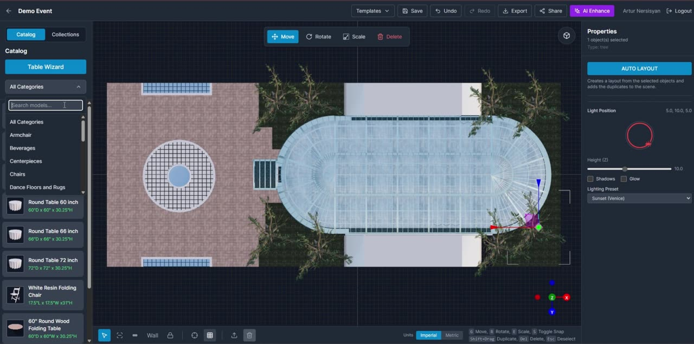
Entities derived from observed API paths and payload field names, expressed as MySQL 8 DDL.
Every field name in this section was observed in the production bundle — as a request-body key, a query parameter, a form-data field or a rendered value. Types, widths, nullability and indexes are engineering judgement; the names and their existence are evidence.
| Convention | Rule |
|---|---|
| Linear dimensions | Integer millimetres, suffix _mm. Observed: width_mm height_mm depth_mm x_mm y_mm z_mm thickness_mm radius_mm diameter_mm length_mm offset_mm distance_mm deck_height_mm extrude_mm curve_depth_mm fold_amplitude_mm |
| Angles | Degrees for UI (angle_deg, sweep_deg), radians in scene maths (yaw_rad). Rotation snap default 10°. |
| World space | Metres for camera, lighting and origin (origin_m, tile_size_m, scale_world_per_px) |
| Model heights | Centimetres for generated-model transforms (source_height_cm, target_height_cm) — “internally stored in cm” |
| Display units | Per-user preferred_units: metric | imperial. Per-plan units also stored; changing the preference does not bulk-change saved plans. |
| Money | Integer minor units — unit_amount, seat_unit_amount (Stripe convention) |
| Timestamps | created_at updated_at completed_at requested_at cycle_ends_at onboarding_completed_at — UTC DATETIME(3) |
CREATE TABLE company (
id BIGINT UNSIGNED PRIMARY KEY AUTO_INCREMENT,
name VARCHAR(160) NOT NULL,
main_email VARCHAR(255),
phone VARCHAR(40),
address_line VARCHAR(255),
city VARCHAR(120),
country CHAR(2), -- 2-letter code, validated client-side
postal_code VARCHAR(20),
logo_url VARCHAR(512), -- PNG/JPG/WEBP, max 10 MB, resized to 512 px
credit_mode ENUM('per_user','shared_pool') NOT NULL DEFAULT 'per_user',
pending_credit_mode ENUM('per_user','shared_pool') NULL, -- applies next cycle
pool_balance INT NOT NULL DEFAULT 0,
global_models_enabled TINYINT(1) NOT NULL DEFAULT 1,
global_textures_enabled TINYINT(1) NOT NULL DEFAULT 1,
company_admin_can_manage_assets TINYINT(1) NOT NULL DEFAULT 0,
ai_image_to_3d_enabled TINYINT(1) NOT NULL DEFAULT 1,
venue_generation_access_override ENUM('default','granted','blocked') NOT NULL DEFAULT 'default',
stripe_customer_id VARCHAR(64),
is_active TINYINT(1) NOT NULL DEFAULT 1,
created_at DATETIME(3) NOT NULL DEFAULT CURRENT_TIMESTAMP(3),
updated_at DATETIME(3) NOT NULL DEFAULT CURRENT_TIMESTAMP(3) ON UPDATE CURRENT_TIMESTAMP(3)
) ENGINE=InnoDB;
CREATE TABLE user (
id BIGINT UNSIGNED PRIMARY KEY AUTO_INCREMENT,
company_id BIGINT UNSIGNED NULL,
email VARCHAR(255) NOT NULL UNIQUE,
password_hash VARCHAR(255) NULL, -- null for Google-only accounts
google_sub VARCHAR(64) NULL UNIQUE,
first_name VARCHAR(60) NOT NULL,
last_name VARCHAR(60) NOT NULL, -- combined max 100 chars, enforced
display_name VARCHAR(120), -- min 2 chars
phone VARCHAR(40),
role ENUM('user','company_admin','super_admin') NOT NULL DEFAULT 'user',
plan_tier ENUM('free','plus','pro') NOT NULL DEFAULT 'free',
preferred_units ENUM('metric','imperial') NOT NULL DEFAULT 'imperial',
appearance ENUM('dark','light') NOT NULL DEFAULT 'dark',
is_email_verified TINYINT(1) NOT NULL DEFAULT 0,
is_blocked TINYINT(1) NOT NULL DEFAULT 0,
marketing_opt_in TINYINT(1) NOT NULL DEFAULT 0,
onboarding_role_id BIGINT UNSIGNED NULL, -- "I am a"
onboarding_design_ids JSON NULL, -- "I mainly design" (multi-select)
onboarding_completed_at DATETIME(3) NULL,
credits_remaining INT NOT NULL DEFAULT 0, -- CACHE of credit_ledger; never authoritative
monthly_credit_quota INT NOT NULL DEFAULT 0, -- may be manually overridden by admin
created_at DATETIME(3) NOT NULL DEFAULT CURRENT_TIMESTAMP(3),
updated_at DATETIME(3) NOT NULL DEFAULT CURRENT_TIMESTAMP(3) ON UPDATE CURRENT_TIMESTAMP(3),
KEY ix_user_company (company_id),
KEY ix_user_plan (plan_tier, is_blocked),
CONSTRAINT fk_user_company FOREIGN KEY (company_id) REFERENCES company(id) ON DELETE SET NULL
) ENGINE=InnoDB;
CREATE TABLE company_member (
id BIGINT UNSIGNED PRIMARY KEY AUTO_INCREMENT,
company_id BIGINT UNSIGNED NOT NULL,
user_id BIGINT UNSIGNED NULL, -- null while invitation pending
invited_email VARCHAR(255) NOT NULL,
role ENUM('member','admin') NOT NULL DEFAULT 'member',
visibility ENUM('own_only','company_wide') NOT NULL DEFAULT 'own_only',
seat_plan_tier ENUM('free','plus','pro') NOT NULL,
status ENUM('invited','active','pending_payment','payment_failed','cancelled') NOT NULL,
invitation_token CHAR(43) NULL UNIQUE,
invitation_expires_at DATETIME(3) NULL,
stripe_subscription_item_id VARCHAR(64),
created_at DATETIME(3) NOT NULL DEFAULT CURRENT_TIMESTAMP(3),
UNIQUE KEY uq_member (company_id, invited_email),
KEY ix_member_user (user_id)
) ENGINE=InnoDB;CREATE TABLE project (
id BIGINT UNSIGNED PRIMARY KEY AUTO_INCREMENT,
owner_id BIGINT UNSIGNED NOT NULL,
company_id BIGINT UNSIGNED NULL,
title VARCHAR(180) NOT NULL,
description TEXT NULL,
created_at DATETIME(3) NOT NULL DEFAULT CURRENT_TIMESTAMP(3),
updated_at DATETIME(3) NOT NULL DEFAULT CURRENT_TIMESTAMP(3) ON UPDATE CURRENT_TIMESTAMP(3),
KEY ix_project_owner (owner_id, updated_at DESC)
) ENGINE=InnoDB;
-- Deletion rule observed in UI: a project with plans cannot be deleted ("Delete all plans first").
CREATE TABLE plan (
id BIGINT UNSIGNED PRIMARY KEY AUTO_INCREMENT,
project_id BIGINT UNSIGNED NOT NULL,
owner_id BIGINT UNSIGNED NOT NULL,
title VARCHAR(180) NOT NULL,
editor_type ENUM('3d','2d') NOT NULL DEFAULT '3d', -- UI label: "Sketch Type"
units ENUM('metric','imperial') NOT NULL, -- copied from user pref at creation
start_in_top_view TINYINT(1) NOT NULL DEFAULT 0,
preview_url VARCHAR(512) NULL, -- dashboard thumbnail
is_read_only TINYINT(1) NOT NULL DEFAULT 0,
object_count INT NOT NULL DEFAULT 0,
created_at DATETIME(3) NOT NULL DEFAULT CURRENT_TIMESTAMP(3),
updated_at DATETIME(3) NOT NULL DEFAULT CURRENT_TIMESTAMP(3) ON UPDATE CURRENT_TIMESTAMP(3),
KEY ix_plan_project (project_id, updated_at DESC),
CONSTRAINT fk_plan_project FOREIGN KEY (project_id) REFERENCES project(id) ON DELETE CASCADE
) ENGINE=InnoDB;
CREATE TABLE plan_scene (
plan_id BIGINT UNSIGNED PRIMARY KEY,
schema_version SMALLINT UNSIGNED NOT NULL DEFAULT 1,
scene JSON NOT NULL, -- objects, groups, transforms, materials
wall_blueprint JSON NULL, -- spans, segments, openings, floor polygons
lighting JSON NULL, -- preset, position, height, shadows, glow
camera JSON NULL, -- mode, position, target, saved camera path
updated_at DATETIME(3) NOT NULL DEFAULT CURRENT_TIMESTAMP(3) ON UPDATE CURRENT_TIMESTAMP(3),
CONSTRAINT fk_scene_plan FOREIGN KEY (plan_id) REFERENCES plan(id) ON DELETE CASCADE
) ENGINE=InnoDB;Each entry in scene.objects[] carries, at minimum, the fields observed in the editor’s properties panel and store:
{
"id": "uuid",
"type": "catalog | shape | wall | floor | curtain | tent | biljax-stage | text | opening",
"catalog_item_id": 1042,
"group_id": "group-table-group-7", // Table Designer keeps sets together
"position_mm": { "x": 0, "y": 0, "z": 0 },
"rotation_deg": { "x": 0, "y": 90, "z": 0 },
"scale": { "x": 1, "y": 1, "z": 1 },
"dimensions_mm": { "width": 1524, "depth": 1524, "height": 768 },
"locked": false,
"opacity": 1.0,
"material_color_config": { "<material_id>": "#c9b08a" },
"texture_variation_id": 88,
"texture_tiling_enabled": true,
"texture_tile_size_m": 0.5,
"params": { /* type-specific: curtain, stage, tent, shape — see §12 */ }
}CREATE TABLE catalog_category (
id BIGINT UNSIGNED PRIMARY KEY AUTO_INCREMENT,
name VARCHAR(120) NOT NULL,
slug VARCHAR(140) NOT NULL UNIQUE,
sort_order INT NOT NULL DEFAULT 0
) ENGINE=InnoDB;
CREATE TABLE catalog_item (
id BIGINT UNSIGNED PRIMARY KEY AUTO_INCREMENT,
category_id BIGINT UNSIGNED NOT NULL,
company_id BIGINT UNSIGNED NULL, -- null = global library
owner_id BIGINT UNSIGNED NULL, -- set for personal "My catalog" items
scope ENUM('global','company','personal') NOT NULL,
name VARCHAR(180) NOT NULL,
description TEXT,
model_url VARCHAR(512) NOT NULL, -- GLB/GLTF/OBJ/FBX, max 50 MB on upload
preview_image VARCHAR(512), -- JPG/PNG/WebP, max 5 MB
icon_url VARCHAR(512),
width_mm INT, depth_mm INT, height_mm INT, diameter_mm INT,
table_shape ENUM('round','rectangular','other') NULL,
seats_default SMALLINT NULL,
is_free_plan_available TINYINT(1) NOT NULL DEFAULT 0, -- "Free users can place this item"
default_material_id VARCHAR(120) NULL,
material_color_config JSON NULL,
variations_manifest JSON NULL,
texture_variation_count SMALLINT NOT NULL DEFAULT 0,
is_active TINYINT(1) NOT NULL DEFAULT 1,
review_status ENUM('pending','approved','rejected') NOT NULL DEFAULT 'approved',
created_at DATETIME(3) NOT NULL DEFAULT CURRENT_TIMESTAMP(3),
KEY ix_item_cat (category_id, is_active),
KEY ix_item_scope (scope, company_id),
FULLTEXT KEY ft_item (name, description)
) ENGINE=InnoDB;
CREATE TABLE catalog_texture_variation (
id BIGINT UNSIGNED PRIMARY KEY AUTO_INCREMENT,
catalog_item_id BIGINT UNSIGNED NOT NULL,
name VARCHAR(140) NOT NULL, -- every variation must be named
material_id VARCHAR(120) NOT NULL,
texture_url VARCHAR(512) NOT NULL,
is_default TINYINT(1) NOT NULL DEFAULT 0,
KEY ix_var_item (catalog_item_id)
) ENGINE=InnoDB;
CREATE TABLE texture_asset (
id BIGINT UNSIGNED PRIMARY KEY AUTO_INCREMENT,
category_id BIGINT UNSIGNED NOT NULL,
company_id BIGINT UNSIGNED NULL, -- null = global library
name VARCHAR(160) NOT NULL,
description VARCHAR(400) NOT NULL, -- "Each texture needs a description"
image_url VARCHAR(512) NOT NULL, -- PNG/JPEG/WebP
pbr_enabled TINYINT(1) NOT NULL DEFAULT 0,
tile_size_m DECIMAL(6,3) NULL,
KEY ix_tex_cat (category_id, company_id)
) ENGINE=InnoDB;CREATE TABLE credit_ledger (
id BIGINT UNSIGNED PRIMARY KEY AUTO_INCREMENT,
user_id BIGINT UNSIGNED NOT NULL,
company_id BIGINT UNSIGNED NULL, -- set when drawn from / added to the pool
delta INT NOT NULL, -- +grant/+purchase/+refund, -debit
reason ENUM('cycle_grant','purchase','debit','refund',
'transfer_in','transfer_out','admin_adjustment') NOT NULL,
feature_code VARCHAR(48) NULL, -- ai_image_to_3d | ai_enhance | ...
ai_job_id BIGINT UNSIGNED NULL,
expires_at DATETIME(3) NULL, -- purchased packs can expire ("One month expiry")
balance_after INT NOT NULL,
created_at DATETIME(3) NOT NULL DEFAULT CURRENT_TIMESTAMP(3),
KEY ix_ledger_user (user_id, created_at DESC),
KEY ix_ledger_feature (feature_code, created_at)
) ENGINE=InnoDB;
CREATE TABLE credit_ratio ( -- admin-editable cost per action
feature_code VARCHAR(48) PRIMARY KEY,
label VARCHAR(120) NOT NULL,
description VARCHAR(400),
credits INT NOT NULL,
is_active TINYINT(1) NOT NULL DEFAULT 1
) ENGINE=InnoDB;
-- Seed: ai_image_to_3d=10, floor_plan_ai_draw=3, ai_enhance=2, google_maps=1,
-- ai_enhance_nano_banana_2, ai_enhance_qwen, venue_generation
CREATE TABLE credit_pack ( -- admin-editable purchasable packs
id BIGINT UNSIGNED PRIMARY KEY AUTO_INCREMENT,
credit_amount INT NOT NULL, -- e.g. 50 / 100 / 150
unit_amount INT NOT NULL, -- USD cents
stripe_price_id VARCHAR(64) NOT NULL,
historical_price_ids JSON NULL,
expiry_days INT NULL,
is_active TINYINT(1) NOT NULL DEFAULT 1,
display_order INT NOT NULL DEFAULT 0
) ENGINE=InnoDB;
CREATE TABLE subscription (
id BIGINT UNSIGNED PRIMARY KEY AUTO_INCREMENT,
user_id BIGINT UNSIGNED NULL,
company_id BIGINT UNSIGNED NULL,
plan_tier ENUM('free','plus','pro') NOT NULL,
billing_source ENUM('stripe','manual','company') NOT NULL DEFAULT 'stripe',
stripe_subscription_id VARCHAR(64),
stripe_subscription_status VARCHAR(32),
billing_cycle_anchor DATETIME(3),
cycle_ends_at DATETIME(3),
monthly_credit_quota INT NOT NULL DEFAULT 0,
cancel_at_period_end TINYINT(1) NOT NULL DEFAULT 0,
cancellation_reason_id BIGINT UNSIGNED NULL,
cancellation_note TEXT NULL,
created_at DATETIME(3) NOT NULL DEFAULT CURRENT_TIMESTAMP(3)
) ENGINE=InnoDB;
CREATE TABLE ai_job ( -- ONE table for all four AI features
id BIGINT UNSIGNED PRIMARY KEY AUTO_INCREMENT,
public_id CHAR(36) NOT NULL UNIQUE, -- job_id / run_id exposed to client
user_id BIGINT UNSIGNED NOT NULL,
company_id BIGINT UNSIGNED NULL,
plan_id BIGINT UNSIGNED NULL,
project_id BIGINT UNSIGNED NULL,
process_type ENUM('ai_image_to_3d','ai_enhance','floor_plan_ai_draw',
'venue_generation','google_maps') NOT NULL,
provider VARCHAR(64), -- world_labs | planner_ai | ...
provider_model VARCHAR(64), -- marble-1.0-draft | nano_banana_2 | qwen
status ENUM('queued','in_progress','completed','failed','cancelled') NOT NULL,
progress TINYINT UNSIGNED NOT NULL DEFAULT 0,
idempotency_key VARCHAR(80) NOT NULL,
credits_charged INT NOT NULL DEFAULT 0,
input_payload JSON, -- prompt, preset_ids, input_mode, source refs
output_payload JSON, -- artefact urls, mesh meta, wall segments
source_image_filename VARCHAR(255),
error_code VARCHAR(64),
error_message TEXT,
trace_id CHAR(32),
created_at DATETIME(3) NOT NULL DEFAULT CURRENT_TIMESTAMP(3),
completed_at DATETIME(3) NULL,
UNIQUE KEY uq_idem (user_id, idempotency_key),
KEY ix_job_type (process_type, status, created_at DESC),
KEY ix_job_user (user_id, created_at DESC)
) ENGINE=InnoDB;CREATE TABLE plan_share (
id BIGINT UNSIGNED PRIMARY KEY AUTO_INCREMENT,
plan_id BIGINT UNSIGNED NOT NULL,
token CHAR(43) NOT NULL UNIQUE, -- opaque, NOT the plan id
mode ENUM('view','embed') NOT NULL DEFAULT 'view',
expires_at DATETIME(3) NULL,
revoked_at DATETIME(3) NULL,
created_at DATETIME(3) NOT NULL DEFAULT CURRENT_TIMESTAMP(3)
) ENGINE=InnoDB;
CREATE TABLE template (
id BIGINT UNSIGNED PRIMARY KEY AUTO_INCREMENT,
owner_id BIGINT UNSIGNED NULL,
scope ENUM('local','global') NOT NULL DEFAULT 'local',
title VARCHAR(180) NOT NULL, -- min 3 chars; unique per scope
description TEXT,
snapshot JSON NOT NULL, -- full plan scene snapshot
preview_url VARCHAR(512),
created_at DATETIME(3) NOT NULL DEFAULT CURRENT_TIMESTAMP(3),
UNIQUE KEY uq_tpl (scope, owner_id, title) -- error TEMPLATE_TITLE_EXISTS
) ENGINE=InnoDB;
CREATE TABLE collection (
id BIGINT UNSIGNED PRIMARY KEY AUTO_INCREMENT,
owner_id BIGINT UNSIGNED NOT NULL,
name VARCHAR(180) NOT NULL,
objects JSON NOT NULL, -- relative placement preserved
object_count INT NOT NULL,
preview_url VARCHAR(512), -- captured from the 3D canvas
source_plan_id BIGINT UNSIGNED NULL,
created_at DATETIME(3) NOT NULL DEFAULT CURRENT_TIMESTAMP(3)
) ENGINE=InnoDB;
CREATE TABLE venue ( -- reusable AI-generated environment
id BIGINT UNSIGNED PRIMARY KEY AUTO_INCREMENT,
owner_id BIGINT UNSIGNED NULL,
company_id BIGINT UNSIGNED NULL,
scope ENUM('public','company','personal') NOT NULL,
name VARCHAR(180) NOT NULL, -- default "Untitled venue"
splat_url VARCHAR(512) NOT NULL, -- SPZ Gaussian splat
preview_url VARCHAR(512),
scale_profile_id BIGINT UNSIGNED NULL,
source_run_id BIGINT UNSIGNED NULL,
created_at DATETIME(3) NOT NULL DEFAULT CURRENT_TIMESTAMP(3)
) ENGINE=InnoDB;
CREATE TABLE plan_venue ( -- attachment + per-plan transform
plan_id BIGINT UNSIGNED PRIMARY KEY,
venue_id BIGINT UNSIGNED NOT NULL,
transform JSON NOT NULL, -- position, rotation, scale
is_locked TINYINT(1) NOT NULL DEFAULT 1,
is_hidden TINYINT(1) NOT NULL DEFAULT 0
) ENGINE=InnoDB;| Table | Purpose and key columns |
|---|---|
plan_floor_plan | Calibrated drawing: image_url, file_key, scale_world_per_px, real_distance, point_a/point_b, origin_m, locked flag |
plan_background | Un-scaled backdrop image: image_url, file_key. One per plan; replacing deletes the old file. |
ai_render | AI Enhance history per plan: job_id, prompt, model, preview_url, media_url, created_at |
onboarding_option | section (1|2), label, sort_order, is_active — the “I am a” / “I mainly design” choices |
onboarding_template_assignment | section_1_option_id × section_2_signature → template_id; the grid that picks a starter workspace |
cancellation_reason | label, requires_note, sort_order, is_active |
subscription_request | Manual upgrade queue: user_id, requested_plan, status, requested_at, decided_by |
theme_preset | name, tokens JSON, is_active — e.g. “DesignCode Light”, “Qiso Blueprint” |
upload | file_key, owner_id, content_type, size, purpose. Deleted explicitly via DELETE /uploads/{file_key}. |
analytics_event | anonymous_id, user_id, name, props JSON — see Appendix B for the observed event vocabulary |
guest_session | session_id, name, email, background_image, camera JSON (extracted perspective). Expires; cleaned up periodically. |
Venue splats are the dominant storage cost — the subject ships a 5 MB renderer, and SPZ assets themselves typically run tens of megabytes. Keep every binary artefact (GLB, textures, renders, exports, splats) in object storage and hold only URLs and keys in MySQL. Never put binaries in the database.
Every endpoint observed in the production bundle, grouped by domain. Paths are verbatim.
This is the single most valuable artefact in this document. Roughly 180 endpoints were recovered by reading axios call sites in the shipped JavaScript. Paths and request payload keys are observed fact; response shapes are inferred from how the client consumes them and are marked where uncertain.
| Method | Path | Notes |
|---|---|---|
| POST | /auth/register | Individual or Company. Company variant adds companyName, companyAddress, companyCountry, companyPostalCode, phone, main email. reCAPTCHA token required. |
| POST | /auth/login | Email + password; reCAPTCHA |
| POST | /auth/google | Google credential exchange |
| GET | /auth/me | Session user: profile, role, plan, credits, company, flags |
| PATCH | /auth/me | display_name, preferred_units, appearance |
| POST | /auth/me/password | Requires current password; new ≥ 8 chars |
| POST | /auth/forgot | Send reset link |
| POST | /auth/reset | Token + new password |
| POST | /auth/verify | Email verification token |
| POST | /auth/verification/resend | Rate-limited |
| GET | /auth/onboarding/section-1 | “I am a” options |
| GET | /auth/onboarding/section-2 | “I mainly design” options |
| POST | /auth/onboarding/bootstrap-assigned-template | Creates the starter project + “Wellcome plan” from the answer pair |
| GET | /privacy/consent | Consent capture |
| POST | /privacy/consent |
| Method | Path | Notes |
|---|---|---|
| GET | /projects/ | Project list with recent plan previews |
| POST | /projects/ | title, optional description |
| PATCH | /projects/{id} | Rename / re-describe |
| DEL | /projects/{id} | Blocked while plans exist |
| GET | /plans/?project_id={id} | Plans in a project |
| GET | /plans/ | All plans for the user |
| POST | /plans/ | title, project_id, editor_type |
| PATCH | /plans/{id} | The save endpoint — scene document, walls, lighting, camera |
| DEL | /plans/{id} | — |
| GET | /plans/share/{token} | Public read-only fetch |
| POST | /plans/{id}/share | Mint a share token; blocked on read-only plans |
| POST | /plans/{id}/export | PDF / PNG / video; returns a download URL |
| Method | Path | Notes |
|---|---|---|
| GET | /catalog/categories | Category list / create |
| POST | /catalog/categories | |
| GET | /catalog/items?… | Params: q, category_id, category_slug, scope, company_id, limit, offset, include_texture_variations, tables-with-linens mode |
| GET | /catalog/items/by-ids?… | Bulk hydrate on scene load |
| GET | /catalog/items/{id}/model | Signed model URL (refreshed on expiry) |
| GET | /catalog/items/{id}/texture-variations | — |
| POST | /catalog/items/upload-with-model | multipart: model (OBJ/FBX/GLB/GLTF, ≤ 50 MB), preview (≤ 5 MB), texture_files, metadata |
| PUT | /catalog/items/{id}/update-with-model | Replace model and/or variations |
| DEL | /catalog/items/{id} | — |
| GET | /textures/categories | Texture library |
| GET | /textures/assets | |
| POST | /textures/sets | |
| PATCH | /textures/assets/{id} | |
| DEL | /textures/assets/{id} | — |
| GET | /templates/ | Local + global |
| POST | /templates/ | Save current plan as template |
| PATCH | /templates/{id} | Overwrite / rename |
| DEL | /templates/{id} | — |
| POST | /templates/{id}/apply-to-plan | Replaces current scene objects |
| GET | /collections/ | Object-group collections |
| POST | /collections/ | |
| GET | /collections/{id} | |
| DEL | /collections/{id} | — |
| GET | /articles/by-key/{key} | Contextual in-app help lookup |
| GET | /theme/config | Active palette tokens |
| Method | Path | Notes |
|---|---|---|
| POST | /uploads/background | PNG/JPG/WebP/GIF/SVG, ≤ 10 MB. Returns file_key. |
| POST | /uploads/google-maps-static | Server-side Static Maps capture; returns image + scale metadata |
| DEL | /uploads/{file_key} | Explicit cleanup on replace/remove |
| POST | /plans/{id}/floor-plan/ai-draw | Start wall tracing. Raster only — SVG rejected. |
| GET | /plans/{id}/floor-plan/ai-draw/{jobId} | Poll status → wall segments |
| Method | Path | Notes |
|---|---|---|
| POST | /plans/{id}/ai-enhance | Body: canvas image, prompt, model |
| GET | /plans/{id}/ai-enhance/{jobId} | Poll |
| GET | /plans/{id}/ai-enhance/history | Powers the “AI Renders” panel |
| POST | /plans/guest/{sessionId}/ai-enhance | Guest-mode variant |
| POST | /model-generation/upload-image-v3 | multipart: image (JPG/PNG/WebP ≤ 10 MB), pbr_enabled, model tier. Returns job_id. |
| GET | /model-generation/status/{job_id} | Poll |
| GET | /model-generation/history | Past runs, reopenable |
| GET | /model-generation/history/{id} | |
| POST | /model-generation/save-to-catalog | name, description, category_id, scope, company_id, target_height_cm, anchor_mode, transformed_glb, preview_image |
| GET | /projects/{id}/venue-generation-capabilities | Access + credit preflight |
| POST | /projects/{id}/venue-generation-runs | multipart. input_mode: single | multi_view | panorama. Idempotency-Key header. |
| GET | /projects/{id}/venue-generation-runs?limit=20 | Run history |
| GET | /venue-generation-runs/{id} | Poll a run |
| POST | /venue-generation-runs/{id}/suggestions | Body: revision_set_id, idempotency_key |
| POST | /venue-generation-runs/{id}/suggestions/skip | — |
| POST | /venue-generation-runs/{id}/image-revisions | Body: parent_revision_set_id, prompt, preset_ids. One cleanup included per run. |
| POST | /venue-generation-runs/{id}/generate | Body: revision_set_id, model, name |
| POST | /venue-generation-runs/{id}/cancel | Refunds credits |
| POST | /venue-generation-runs/{id}/finish | Body: name, scale_profile_id |
| GET | /projects/{id}/venues | Reusable venue library |
| PUT | /plans/{id}/venue | Attach. Body: venue_id, replace |
| GET | /plans/{id}/venue | Accepts share_token for public views |
| PATCH | /plans/{id}/venue/transform | Position / rotation / scale of the environment |
| DEL | /plans/{id}/venue | Detach; venue stays in the library |
| Method | Path | Notes |
|---|---|---|
| GET | /subscription/pricing | Live tier prices; checkout disabled if unavailable |
| GET | /subscription/credit-ratios | Cost per action, for display |
| GET | /subscription/cancellation-reasons | Required reason list |
| POST | /subscription/checkout-session | Plan checkout |
| POST | /subscription/checkout-sessions/{id}/complete | |
| POST | /subscription/checkout-sessions/{id}/complete-onboarding | Onboarding-specific return path |
| POST | /subscription/credit-checkout-session | Credit-pack purchase |
| POST | /subscription/credit-checkout-sessions/{id}/complete | |
| POST | /subscription/customer-portal | Stripe portal redirect |
| POST | /subscription/cancel | Reason + optional note; schedules at period end |
| GET | /company/profile | Company details |
| PATCH | /company/profile | |
| POST | /company/logo | ≤ 10 MB, resized to 512 px, used on PDF exports and embeds |
| DEL | /company/logo | |
| POST | /company/convert | Upgrade an individual account to a company workspace |
| GET | /company/members | Team list |
| PATCH | /company/members/{id} | Role / visibility |
| DEL | /company/members/{id} | Projects transfer to the company owner |
| POST | /company/seats | Add a seat; company card charged before invite is sent |
| POST | /company/seats/preview | |
| POST | /company/seats/checkout-sessions/{id}/complete | — |
| POST | /company/members/{id}/upgrade | Move a member Plus → Pro mid-cycle, with proration preview |
| POST | /company/members/{id}/upgrade/preview | |
| POST | /company/members/{id}/credits/checkout-session | Buy credits for one member |
| POST | /company/member-credit-checkout-sessions/{id}/complete | |
| PATCH | /company/settings/credit-mode | Per-user ⇄ shared pool; applies next cycle |
| GET | /company/credits/history | Usage by member and feature; CSV export |
| GET | /company/credits/history/export | |
| GET | /company/billing/expenses | Company spend |
| POST | /company/billing/customer-portal | Stripe portal for the company |
| GET | /company/invitations/preview | Invitation landing + acceptance |
| POST | /company/invitations/accept |
All 26 admin endpoint families, recovered from the Super Admin Console chunk and the main bundle.
| Method | Path | Console section |
|---|---|---|
| GET | /admin/analytics/dashboard | Analytics |
| GET | /admin/analytics/registered-users | |
| GET | /admin/analytics/registered-users/{id}/events | |
| GET | /admin/users?… | Users — search, filter by company / role / status, paginate |
| POST | /admin/users | |
| PATCH | /admin/users/{id} | |
| DEL | /admin/users/{id} | |
| POST | /admin/users/{id}/impersonate | |
| POST | /admin/users/{id}/reset-password | |
| GET | /admin/companies | Companies + tenant asset flags |
| POST | /admin/companies | |
| PATCH | /admin/companies/{id} | |
| DEL | /admin/companies/{id} | |
| GET | /admin/companies/{id}/users?sort=created_desc | Company Users |
| GET | /admin/company/users?… | Company Users drill-down |
| GET | /admin/company/users/{id}/projects | |
| GET | /admin/company/users/{id}/plans | |
| GET | /admin/company/projects/{id}/plans | — |
| GET | /admin/catalog-reviews?… | Model & Venue Review |
| GET | /admin/catalog-reviews/{id} | |
| POST | /admin/catalog-reviews/{id}/approve | |
| POST | /admin/catalog-reviews/{id}/reject | |
| GET | /admin/subscription-billing-prices | Stripe Pricing — creates new recurring Prices |
| PATCH | /admin/subscription-billing-prices | |
| GET | /admin/subscription-plan-credits | Plan monthly credit quotas |
| PATCH | /admin/subscription-plan-credits | |
| GET | /admin/subscription-credit-packs | Purchasable packs |
| PATCH | /admin/subscription-credit-packs | |
| GET | /admin/subscription-credit-ratios | Cost per AI action |
| PATCH | /admin/subscription-credit-ratios | |
| GET | /admin/subscription-users | Paid Subscribers |
| GET | /admin/subscription-requests | Manual upgrade approvals |
| POST | /admin/subscription-requests/{id}/approve | |
| POST | /admin/subscription-requests/{id}/reject | |
| GET | /admin/subscription-cancellations | Cancellation Feedback |
| GET | /admin/subscription-cancellation-reasons | Reason catalogue (requires_note, order) |
| POST | /admin/subscription-cancellation-reasons | |
| PATCH | /admin/subscription-cancellation-reasons/{id} | |
| GET | /admin/onboarding/section-1 | Onboarding options + starter-template grid |
| POST | /admin/onboarding/section-1 | |
| PATCH | /admin/onboarding/section-1/{id} | |
| DEL | /admin/onboarding/section-1/{id} | |
| GET | /admin/onboarding/template-assignments/grid | |
| PUT | /admin/onboarding/template-assignments | |
| DEL | /admin/onboarding/template-assignments/{id} | (section-2 mirrors section-1 exactly) |
| GET | /admin/reports/model-generations?… | Operational AI reporting, filterable and searchable |
| GET | /admin/reports/venue-generations?… | |
| GET | /admin/reports/ai-process-runs?… | |
| GET | /admin/theme | Global palette preset |
| PATCH | /admin/theme |
| Concern | Convention |
|---|---|
| Pagination | ?limit=&offset=; responses carry has_more. Infinite scroll in catalogue panels (“Scroll to load more…”). |
| Sorting | Token strings — created_desc |
| Filtering | created_from / created_to, status, company_id, mode, free-text q |
| Idempotency | Idempotency-Key header on multipart AI posts; idempotency_key body field on JSON AI posts. Client-generated as {action}-{uuid}. |
| Error codes | PLAN_UPGRADE_REQUIRED · PLAN_REQUEST_PENDING · INSUFFICIENT_CREDITS · TEMPLATE_TITLE_EXISTS · provider_payment_required · payment_failed |
| Access failures | 403 and 404 are treated identically by the client’s retry logic — retries are suppressed, and the user is redirected to /dashboard |
| Public access | Share endpoints accept a share_token query parameter instead of a bearer token |
Shell, viewport, camera, selection, transforms and history — the 80% of the product.
<select> (“All Categories”, Tents, Stages, Chairs, Beverages, Centerpieces, Dance Floors and Rugs, Decor & Accessories, Armchair, Linens…)60"D × 60" × 30.25"H) or a descriptor and variation count (4× (4' × 4') Panels · 3 Variations)| Tool | Analytics id | Behaviour |
|---|---|---|
| Select | editor.toolbar.select | Default; single click selects |
| Selection Box | editor.toolbar.select-box | Drag-rectangle multi-select, best in top view |
| Line Placement | editor.toolbar.line-placement | Repeat an item along a line |
| Shapes | editor.toolbar.shapes | Disabled while wall editing is open |
| Wall | editor.toolbar.wall-draw | 3D only; opens the Walls panel |
| Lock / Unlock | editor.toolbar.lock-toggle | Prevents accidental movement |
| Isolate | editor.toolbar.isolate | Hides everything else — including floor plan and background |
| Focus Selected | editor.toolbar.focus-selected | Frames the selection |
| Toggle Grid | editor.toolbar.toggle-grid | Shortcut G |
| Camera Path | editor.toolbar.camera-path-edit|play|clear | Author a fly-through for video export; unavailable while wall editing |
| Import ▸ | editor.toolbar.import-floor-plan | Opens “Choose import flow” |
| Delete ▸ | editor.toolbar.remove-floor-plan | Remove Floor Plan / Remove Background |
Right of the toolbar sits a Units segmented control (Imperial | Metric) and a persistent keyboard legend.
Transcribed field-for-field from editorStore in the production bundle, defaults included.
{
selectedObjectIds: [],
isolateMode: false, isolatedObjectIds: [],
tool: "select",
units: "ft",
gridSize: 500,
rotationSnap: 10, // degrees
showGrid: true, snapToGrid: false, showGuides: false,
shadowsEnabled: true, glowEnabled: false,
lightingPosition: { x: 5, y: 10, z: 5 },
lightingPreset: "sunset",
cameraMode: "perspective",
linePlacement: { item: null, offsetMm: 0, angleDeg: 0, baseAxis: "auto" },
shapePlacement: { kind: null }
}
Isolation is modelled carefully and worth copying: toggleIsolation, extendIsolation
(add newly created objects to an active isolation), pruneIsolation (drop deleted ones, and exit
automatically if the set empties) and clearIsolation. Angle helpers normalise to 0–360°,
snap to the rotation increment, and format as +90°.
| Mode | Behaviour |
|---|---|
| Top T | Orthographic. Correct for placement, spacing, selection box, floor-plan tracing. Some tools force a switch to it. |
| Perspective P | For height, realism, camera paths and client presentation. |
| Navigation | Orbit / pan / zoom, plus WASD fly movement. |
| View cube | Top-right of the canvas — a quick orientation control. |
| Axis gizmo | Bottom-right — RGB XYZ orientation indicator. |
| Camera Path | Ordered path points with per-path playback settings and animation speed; drives Export Video. |
A floating bar sits above the canvas with Move · Rotate · Scale · Delete. On selection, a radial context menu appears at the object: cut, delete, pin/lock, duplicate, favourite, paste.
| Action | Shortcut | Notes |
|---|---|---|
| Move | G | Translate along gizmo axes |
| Rotate | R | Snapped to 10° by default |
| Scale | E | Supported object types only |
| Toggle snap | S | Grid snapping |
| Duplicate | Shift+drag | — |
| Delete | Del / Backspace | — |
| Deselect | Esc | — |
| Undo / Redo | Ctrl/Cmd+Z · Ctrl+Shift+Z / Ctrl+Y | — |
| Copy / Cut / Paste | standard | Via the radial menu too |
Objects created by Table Designer carry a group_id (e.g. group-table-group-7) so a
table, its linen, its chairs and every place setting move as one.
-6.8, 4.5, -1.8)UnrealBloomPass).hdr files:| UI label | HDRI asset |
|---|---|
| Sunset (Venice) | venice_sunset_1k.hdr — the default |
| Dawn | kiara_1_dawn_1k.hdr |
| Night | dikhololo_night_1k.hdr |
| Forest | forest_slope_1k.hdr |
| Lebombo | lebombo_1k.hdr |
| Mountain | immenstadter_horn_1k.hdr |
| Bridge | adams_place_bridge_1k.hdr |
| Plaza | potsdamer_platz_1k.hdr |
| Outdoor (Park) | rooitou_park_1k.hdr |
| Warehouse | empty_warehouse_01_1k.hdr |
| Indoor | st_fagans_interior_1k.hdr |
| Studio | studio_small_03_1k.hdr |
These are the standard Poly Haven HDRI names — all CC0 licensed, so Nozila can use the same set legitimately.
The save-failure handling is unusually good. It never navigates away on failure, it tells the user exactly what is still safe, and it offers Retry save. For a tool where a lost scene is an hour of work, this is the difference between an annoyance and a churn event.
With admin mode active, a small overlay appears at the top-left of the canvas showing FPS, Scene tris and Selected tris, labelled “Admin-only perf overlay”. Cheap to build, and invaluable for diagnosing customer reports of slow scenes.
Table Designer, Quick Layout, Line Placement, shapes, walls, rooms and openings.
The highest-value tool in the product. It generates an entire banquet arrangement in one pass, and keeps every generated clone in sync afterwards.
| Slot | Helper text observed in the product |
|---|---|
| Plate / Platter | “Choose the primary plate used at every generated seat.” |
| Beverage (Glass) | “Choose the beverage glassware placed with each seat.” |
| Beverage, second cup | “Cup 2” / “Second glass” |
| Flatware — Fork 1 | “Choose the utensils cloned onto each place setting.” |
| Flatware — Fork 2 | |
| Flatware — Knife | |
| Flatware — Spoon | |
| Centerpiece | “Choose the centerpiece placed at the middle of every generated table.” |
“Every configured slot is cloned onto each generated seating position and stays in sync with table, chair, and Quick Layout changes.”
That is the hard part. Changing the chair after generation must re-derive every seat position and
move all eight place-setting items per seat. Implement place settings as a derived instanced group
recomputed from the group’s parameters — never as loose independent objects. The bundle confirms
this with an InstancedPlaceSettings component.
Slot management affordances: Clear Slot, Clear Section, Clear All, and “Back to place setting slots”. In applied mode, “Applied mode locks slot editing.”
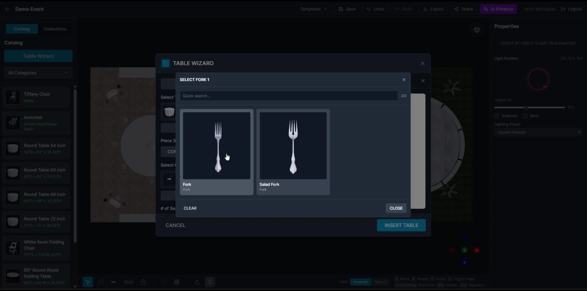
2/2), a card grid, and Clear / Close. The parent modal stays mounted behind it. (Earlier generation, named “Table Wizard”.)Takes the current selection and generates a duplicated arrangement. Available both inside Table Designer and as a properties-panel action on any selection.
| Preset | Use |
|---|---|
| Grid | Rows × columns — the banquet default |
| Angled Grid | Rotated grid for diagonal rooms |
| Rows | Ceremony seating |
| Pyramid | Narrows toward one end |
| Diagonal | — |
| Curved | Arc facing a focal point |
| Circle / Closed Circle | Around a stage or centrepiece |
| U Shape | Conference and boardroom |
| Aisle | Splits with a centre aisle — “Items in First Row”, “Items on Wings” |
Number of Rows · Number of Columns · Items per Row · Space Between Rows · Space Between Columns (each as feet + inches in imperial) · Gap Between Items · Angle · Sweep (degrees) · Radius · Item increment. A summary shows Total items, Selected objects and total objects, with a live 3D preview.
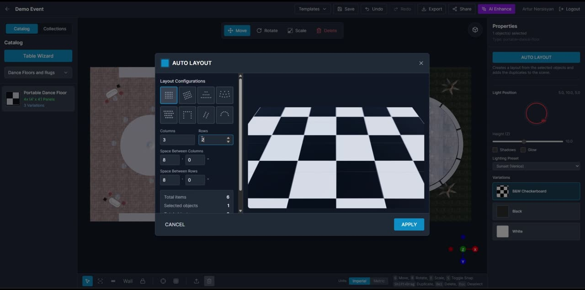
For chairs, stanchions, barricades and repeated decor. Configure item, spacing offset
(offsetMm), placement angle (angleDeg) and base axis (auto | X axis |
Z axis), then draw the run on the canvas — best in top view. Validation messages: “Enter a valid
offset.”, “Enter a valid angle.”
Fast placeholder geometry for zones, platforms, scenic panels and measurement markers. Kinds: Rectangle · Square · Circle · Triangle · Star · Box.
Properties: Width · Depth · Height · Diameter · Radius · Extrude Height (“Default extrude is 0, which keeps the shape flat on the floor plane”) · Fill Color · Fill Opacity · Border Color · Border Opacity · Shape color. Live readouts show Area, Center, Vertices and Segments.
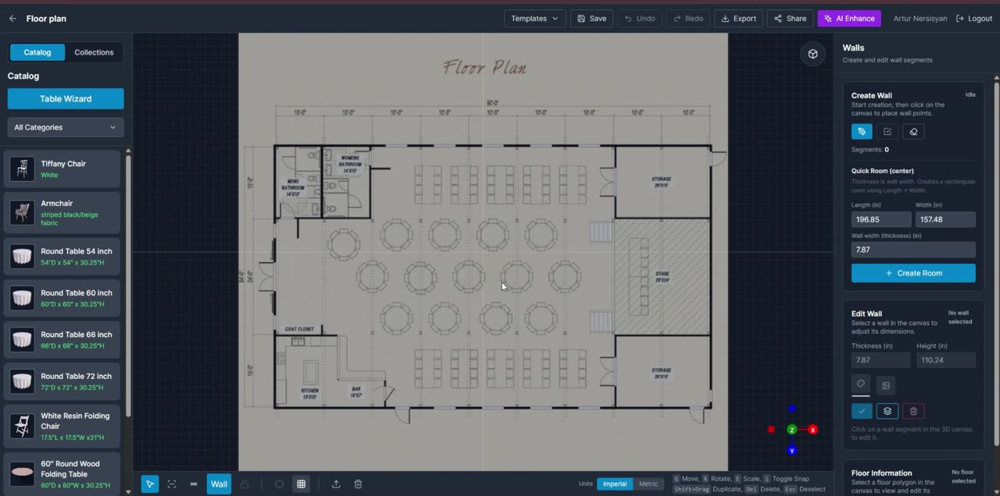
Enter Length, Width and Wall width (thickness) → Create Room generates a rectangular room at the origin. Helper: “Thickness is wall width. Creates a rectangular room using Length × Width.”
Select a segment to edit Thickness and Height, apply a Wall color or Wallpaper texture, or delete the segment. Scope buttons make bulk edits fast: Apply style to selected wall / Apply style to all walls, and the same pair for floors.
Click a floor polygon to see Area, Center and Vertices, and apply a Floor color or floor texture with Tile (m) sizing and a tiling toggle.
Wall geometry persists as a wall_blueprint with spans (span_id,
parent_span_id), segments (segment_id) and derived floor polygons.
Doors and windows are ordinary catalogue items that behave specially when dropped near a wall:
wall_attachment.bottom_mm) and side.
With exactly one catalogue model selected in 3D mode, a Colors control lists every material in
the GLTF and allows a tint per material. “The tint is applied per configured material and preserves
the original texture detail.” Actions: Apply, Reset all, Cancel. Hidden for unsupported
models, in 2D mode, and for multi-selection. Multi-colour is GLB/GLTF only. Stored as
material_color_config.
Items may ship alternate textures selectable in the properties panel (e.g. a dance floor’s B&W Checkerboard / Black / White). Uploading an item lets an admin attach variations, each requiring a name, a material id and a texture file.
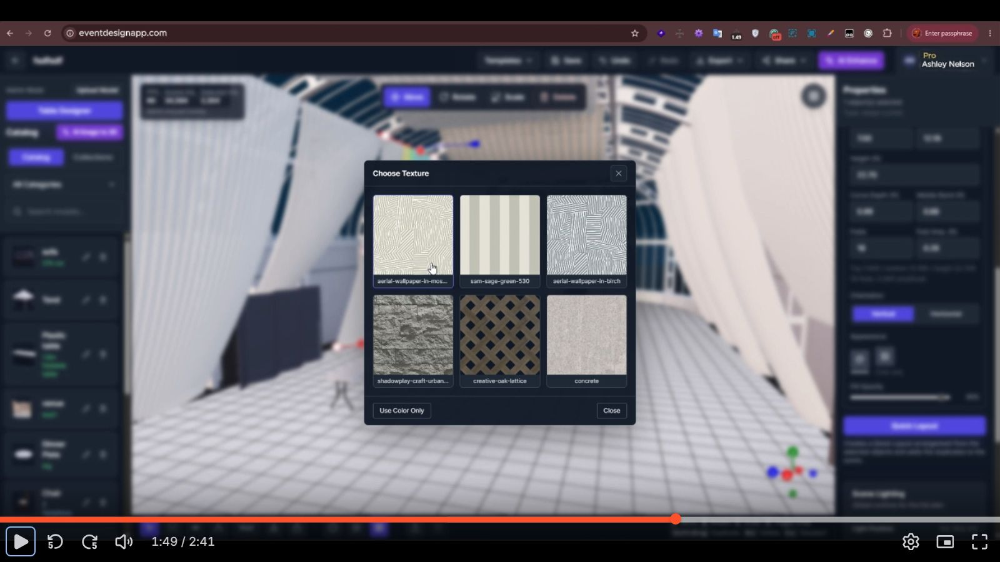
Tent, stage and drape — the domain-specific parametric objects that set the product apart.
These three are what separate the product from a generic furniture-placement tool. Each is a parametric object with a bespoke properties panel, and each encodes real trade knowledge. Budget accordingly — they are individually as much work as the whole catalogue system.
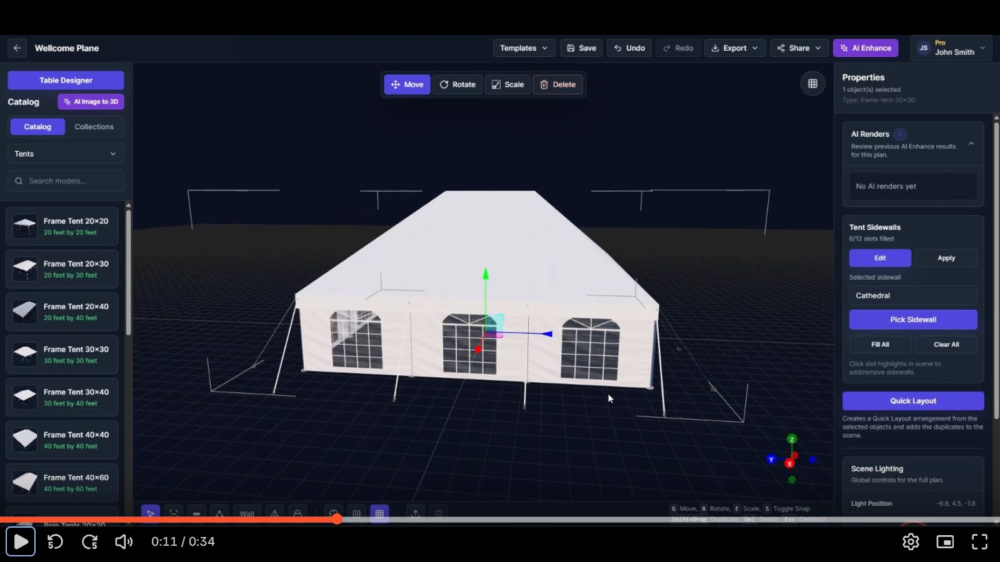
Tents are catalogue items with a dedicated object type (TentObject3D, type slug
frame-tent-30×30). Families and sizes observed:
| Family | Sizes seen in the catalogue |
|---|---|
| Frame tents | 20×20 · 20×30 · 20×40 · 30×30 · 30×40 · 40×40 · 40×60 |
| Pole tents | 20×20 and up |
| Sailcloth | Marketing-confirmed |
| High-peak marquee | Marketing-confirmed |
The marketing site adds: “Need something not in the library? New tent types and custom dimensions can be created for your fleet.” — i.e. bespoke tents are an onboarding service, not a self-serve feature.
A tent exposes a fixed number of sidewall slots — one per bay per side — shown as a
filled/total counter (“6/12 slots filled”). Slots are highlighted in the 3D scene and clicked to
add or remove: “Click slot highlights in scene to add/remove sidewalls.”
Sidewall types: Cathedral · Panoramic · Solid · Structured · Tinted windows · Arch windows · Curtains.
Data: selected_sidewall, tent-sidewalls slot array, default-solid-panel fallback.
Empty state: “No tent sidewalls found in catalog.” Guard: “Select tent in scene to discover slots.”
The vinyl canopy can be hidden so the interior can be laid out and viewed. Everything else — tables, staging, draping, catalogue items — is placed inside at true scale as normal.
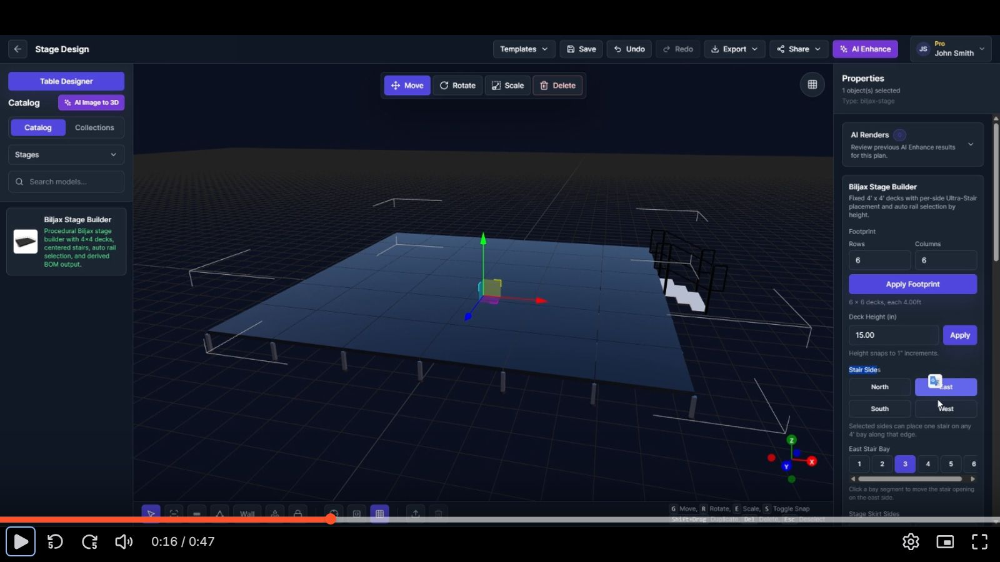
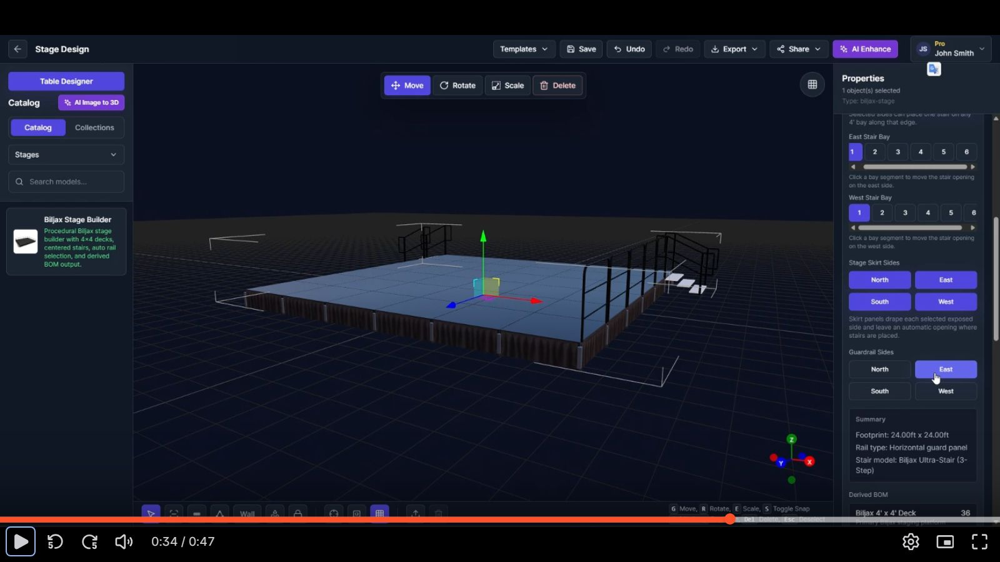
Presented as a catalogue item — “Biljax Stage Builder — Procedural Biljax stage builder with 4×4 decks,
centered stairs, auto rail selection, and derived BOM output.” Object type biljax-stage.
| Control | Behaviour and exact helper text |
|---|---|
| Footprint | Rows and Columns of 4′×4′ decks → Apply Footprint. Readout: “6 × 6 decks, each 4.00ft”. |
| Deck Height (in) | Numeric + Apply. “Height snaps to 1″ increments.” |
| Stair Sides | North / East / South / West toggles. “Selected sides can place one stair on any 4′ bay along that edge.” |
| {Side} Stair Bay | A numbered segmented control (1…n) per selected side. “Click a bay segment to move the stair opening on the east side.” |
| Stage Skirt Sides | N/E/S/W. “Skirt panels drape each selected exposed side and leave an automatic opening where stairs are placed.” |
| Guardrail Sides | N/E/S/W. Rail type is chosen automatically by height. |
| Summary | “Footprint: 24.00ft × 24.00ft / Rail type: Horizontal guard panel / Stair model: Biljax Ultra-Stair (3-Step)” |
| Derived BOM | Live parts list — e.g. “Biljax 4′ × 4′ Deck … 36” |
| Part | Description as shipped |
|---|---|
| Biljax 4′ × 4′ Deck | “Primary Biljax staging platform deck.” |
| Biljax Stage Leg | — |
| Biljax Stair Support Leg | — |
| Biljax Snap Pin | “Snap pins for the primary stage legs.” / “…for stage legs and stair support legs.” |
| Biljax Rubber Base Pad | “Rubber base pads for the primary stage legs.” |
| Biljax Vertical Guardrail | Auto-selected above 30″ |
| Biljax Horizontal Guard Panel | Auto-selected at or below 30″ |
| Biljax Ultra-Stair | 3-, 4-, 6-, 8- and 10-step variants |
| Stage Skirt 4′ Section | “Pleated black stage skirt section for a single exposed 4-foot bay.” |
Biljax is a real manufacturer. Shipping their brand name, part names and load rules implies an endorsement the subject may or may not have. Two consequences for Nozila:
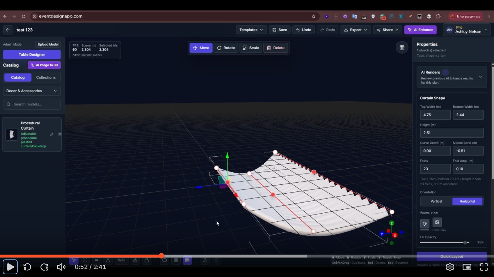
| Field | Example | Notes |
|---|---|---|
| Top Width (m) | 4.75 | top_width_mm |
| Bottom Width (m) | 2.44 | bottom_width_mm |
| Middle Width (m) | — | middle_width_mm |
| Height (m) | 2.51 | — |
| Curve Depth (m) | 0.00 | curve_depth_mm — bow of the run in plan |
| Middle Bend (m) | -0.51 | middle_curve_mm — signed centre bend |
| Folds | 23 | fold_count — pleat count |
| Fold Amp. (m) | 0.10 | fold_amplitude_mm — pleat depth |
| Orientation | Vertical | Horizontal | Segmented control |
| Appearance | texture | colour | Two icon options plus “Color only” |
| Fill Opacity | 95% | Slider — enables sheer/translucent fabrics |
A live summary restates the configuration: “Top 4.75m / bottom 2.44m / height 2.51m · 23 folds, 0.10m amplitude”.
The curtain carries a 3×3 handle grid (top/middle/bottom × left/centre/right), stored as
six extent fields plus three widths: top_left_extent_mm, top_right_extent_mm,
middle_left_extent_mm, middle_right_extent_mm, bottom_left_extent_mm,
bottom_right_extent_mm.
Use cases named by the product: pipe-and-drape, ceiling drapes, wall draping, ceremony backdrops, room dividers, fabric installations.
Getting the real world into the scene: floor plans, backgrounds and aerial maps.
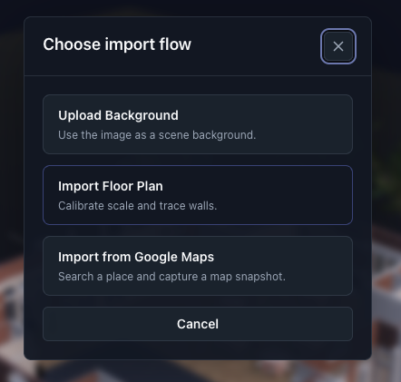
The import button is hidden entirely in view-only and shared guest links — an access decision, not just a disabled state.
| Formats | PNG, JPG, WebP, GIF, SVG |
| Max size | 10 MB |
| Placement | None — “the image is applied as soon as the upload finishes. There is no placement step.” |
| Behaviour | Fills the canvas behind the scene in both 2D top view and 3D. Included in exports and renders. Not on the floor plane, and not moved, scaled, rotated or faded. |
| Replacement | Uploading a new background replaces the current one and deletes the old file. |
| Removal | Trash icon → Remove Background → confirm. Deletes the uploaded file too. |
| Gotcha | Isolate mode hides the background and the floor plan — a documented support issue. |
This is the feature that makes everything else trustworthy, and the help centre documents it in more detail than anything else in the product.
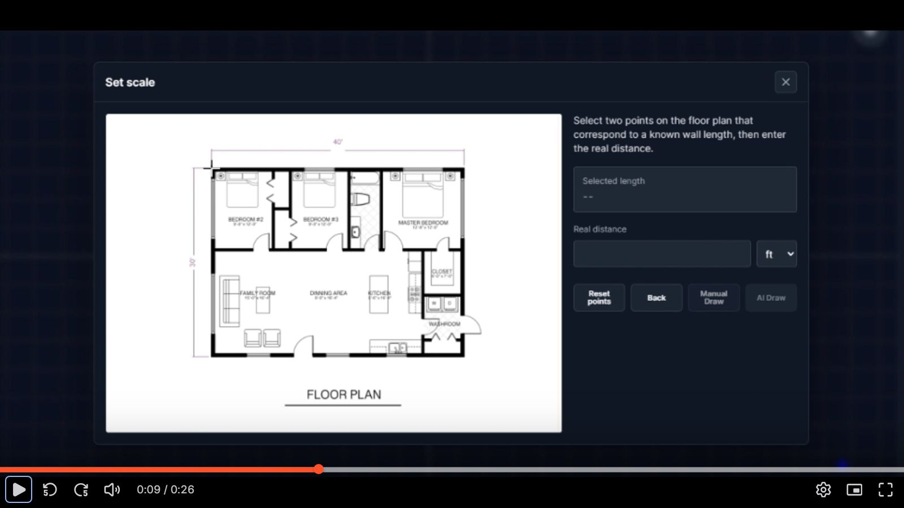
| Manual Draw | AI Draw | |
|---|---|---|
| Availability | Free on every plan | Plus or Pro, and consumes credits (3) |
| Input | Any supported image incl. SVG | Raster only |
| Process | You trace with the wall tool | Async job with a status panel: “Starting AI Draw worker…”, “Waiting for AI Draw worker…”, “AI Draw running”, “AI Draw complete” |
| Result | Exactly what you drew | “AI walls added. Review before saving.” |
| Failure | — | Always falls back: “Continue with Manual Draw or try a clearer raster image.” |
Every AI feature here has a free manual equivalent that the failure path routes to. The AI is an accelerator, never a dependency. That single decision is why an AI provider outage degrades this product instead of breaking it.
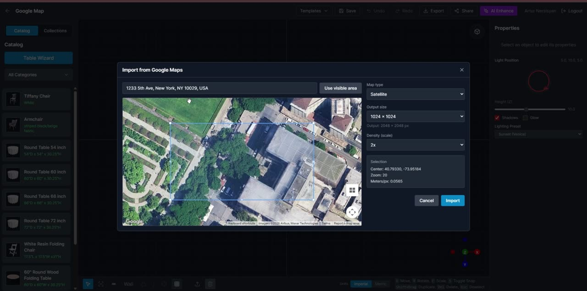
| Control | Detail |
|---|---|
| Place search | “Search a place or address” with Places autocomplete. Fallback: “Address suggestions are unavailable. Enter the address manually.” Guard: “Select a place that has location data.” |
| Use visible area | Captures the current viewport instead of a searched place |
| Map type | Satellite · Roadmap · Terrain (“Map”) |
| Output size | e.g. 1024 × 1024, with the effective pixel output shown (“Output: 2048 × 2048 px”) |
| Density (scale) | 1× / 2× — the Static Maps scale multiplier |
| Selection readout | Center lat/lng · Zoom · Meters/px |
| Credits | 1 credit, charged only after a successful import |
| Errors | “Failed to load Google Maps.” · “Invalid Google Maps response” · “Failed to import Google Maps image.” · “Map is not ready yet.” |
The capture is performed server-side (POST /uploads/google-maps-static), which keeps the
signing key private and lets the server compute and store scale_world_per_px so the image lands
in the scene at true scale with no calibration step.
Google Maps Platform terms restrict how Static Maps imagery may be stored, modified and redistributed — and an event render sent to a client is redistribution. Check the current terms before shipping this, and budget for attribution being required on exports.
Four job types, one lifecycle. The commercial engine of the product.
All four report into one operational view (/admin/reports/ai-process-runs) with common
columns: user, email, company, plan, provider, model, status, reference id, error, timestamps.
Build the abstraction once.
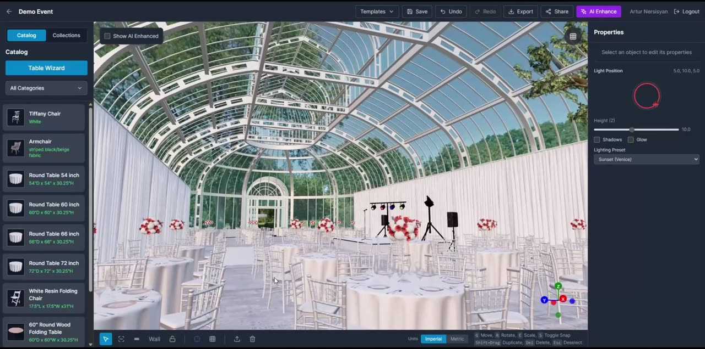
| What it does | Generates an improved image from the current plan view “while trying to preserve the existing structure, objects, camera angle, and layout.” |
| Input | A canvas capture plus an editable prompt — “Describe how the image should be enhanced” / “Edit the enhancement prompt before generating the AI-enhanced image.” |
| Models | A default model, a pro model (nano_banana_2) and a Qwen option — each with its own credit cost. |
| Cost | 2 credits for the default; the pro and Qwen rates are admin-set. |
| Output | Toggled via Show AI Enhanced; appended to the plan’s AI Renders history with a thumbnail. |
| History | “Review previous AI Enhance results for this plan.” — collapsible panel, count badge, empty state “No AI renders yet”. |
| Errors | “AI Enhancement failed”, “Enhancement failed to start”, “No canvas image available. Please ensure the plan is rendered.” |
| Guest mode | Available to guests via a separate endpoint. |
Marketing claims “<2 min render time”. The states are staged carefully — Enhance → Enhancing… → AI Enhancement complete — with the header button itself carrying the progress.
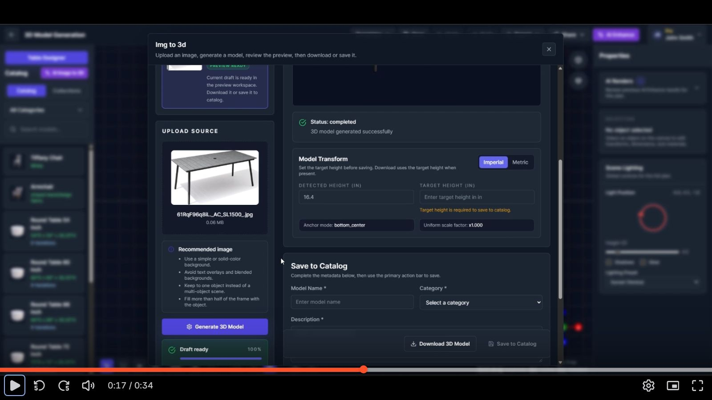
source_height_cm | “Detected Height” — measured from the generated mesh bounds |
target_height_cm | Operator-entered real height. Required to save to catalog; must be > 0. |
| Uniform scale factor | Derived and displayed (×1.000) |
anchor_mode | e.g. bottom_center — so the item sits on the floor rather than through it |
| Units | Imperial / Metric toggle within the modal |
transformed_glb | The rescaled, re-anchored mesh that is actually stored |
Helper text: “Set the target height before saving. Download uses the target height when present.” · “Required for catalog save. Internally stored in cm.”
Requires Model Name, Description and Category; Scope selects My catalog, Company only or Global library (the last two gated by role). A preview image is captured automatically from the 3D workspace. History is browsable and reopenable; already-saved runs are read-only.
Post-save advice from the help centre: check scale, texture quality and orientation before using generated models in production layouts.
The workspace also exists as a standalone route (/dashboard/generate-model), and can be
disabled per account: “This workflow is currently turned off for this account. A super admin can
re-enable it from the user settings in the Super Admin Console.”
Covered end to end in §13.3. In job terms: input is the calibrated raster plan; output is a set of wall segments inserted into the scene for review; cost is 3 credits; failure always falls back to Manual Draw.
The most ambitious feature and the newest — labelled “Private, resumable generation · beta”. It runs on its own route as a multi-step wizard rather than inside the editor.
| Mode | Key | Requirements |
|---|---|---|
| Single photo | single | “One clear photo of the venue.” Sharp, well-lit, visible architecture. |
| Multi-view | multi_view | Front · 0° and Back · 180° required; Right · 90° and Left · 270° optional. |
| 360° panorama | panorama | “One exact 2:1 equirectangular image.” Projection, 2:1 dimensions and the left/right wrap seam are validated: “Width must equal exactly 2 × height after orientation normalization.” |
Upload limits: JPG, PNG or WebP · 10 MiB each, 40 MiB total · all files uploaded together · EXIF/GPS stripped.
marble-1.0-draft) and name it (“Example: Grand Ballroom”). Runs asynchronously: “World Labs is generating the Venue…”“The service preserves walls, doors, windows, columns, floor, ceiling and camera perspective.” Cleanup is “one atomic, architecture-preserving edit across every input” that removes temporary items while preserving architecture.
provider_payment_required)This feature carries the highest cost and the least proven value in the product: a 5 MB client renderer, an expensive third-party dependency, multi-minute latency, and a beta label. Defer it. A calibrated floor plan plus a photographic background delivers most of the client-facing benefit at a fraction of the cost. Revisit once the core product is earning.
Export, share, embed, templates, collections and the guest workflow.
| Format | Behaviour |
|---|---|
| Printable plan review. Requires the plan to be saved first — “Please save the plan before exporting PDF”. Company logo is used on PDF exports. | |
| PNG | Quick image of the current view. |
| Video | Records a camera-path fly-through client-side via MediaRecorder as video/webm;codecs=vp8. Availability is browser-dependent: “Video export is not supported in this browser.” |
States are explicit throughout — Exporting PDF… / PDF exported / PDF export failed. The server
returns a download URL; a missing one is reported as “Export response missing download URL.”
Emits an export_completed analytics event.
/share/:token).Share → Embed iframe generates copy-paste iframe markup with configurable Width and Height (validated: “Use 100% or a pixel width.”, “Use a pixel height.”). Embedded views can remove the normal header entirely.
This is the mechanism behind the marketing claim “Let clients design their own events directly on your website” — a rental company embeds a plan or a guest session in its own site.
| Purpose | Reuse a full plan setup — a room shell, a standard floor plan, a common seating arrangement. |
| Scopes | Local — “stay private to your account”. Global — “available to every user.” |
| Fields | Name (min 3 chars, unique — TEMPLATE_TITLE_EXISTS), description (“What this template is for”), visibility. |
| Loading | Destructive and warned: “Loading this template will remove current scene objects and replace them with template objects.” Confirmation: Replace Scene Objects? |
| Overwrite | “Do you want to overwrite it with the current plan snapshot?” → Overwrite Template? |
| Constraint | “Please save the plan before creating a template.” |
| Also used for | Onboarding starter workspaces — an admin maps each answer combination to a global template. |
Reusable groups of selected objects — lounge sets, table groups, stage packages, decor clusters. Select objects → Save as Collection → name it. They appear under the Catalog panel’s Collections tab and are placed like catalogue items.
application/x-3d-catalog-item and application/x-3d-collection.A no-account path intended for embedding on a rental company’s own website.
/guest-editor/:sessionId with catalog and
properties panels, AI Enhance and Export, but no save, share or import.Perspective extraction means a guest’s furniture sits in their own photo at a plausible angle instead of floating on a flat backdrop. It is classical computer vision — vanishing-point detection via a homography solve, which the bundle confirms (“Homography requires exactly 4 point correspondences”) — not an AI call, so it costs nothing per use.
Session state lives in browser storage, with an explicit quota-exceeded path (“Storage quota exceeded. Image will not be saved.”) and periodic cleanup of stale sessions. Sessions expire: “The guest session could not be found or has expired.”
The commercial machinery — tiers, the credit economy, Stripe, and cancellation.
New users land on a two-step onboarding before they ever reach the dashboard.
Draft answers are persisted under a local-storage key (event-design:onboarding-checkout-draft)
so a Stripe round-trip does not lose them. Cancelled checkout returns with a clear message and the
answers intact.
“This account already has full access to all models and AI tools. No plan request, subscription approval, or credit gating applies to super admins.”
Positioned to the user as: “Credits power the AI features. You only spend them when you run one — everything else is unlimited.” This is a good frame and worth borrowing: it makes metering feel like fairness rather than restriction.
| Mechanism | Behaviour |
|---|---|
| Monthly grant | Plus 100 / Pro 200, granted at the start of each billing cycle. Admin-editable per tier; individual users can have a manual override (“Manual changes override the default plan quota and remaining credits for this user.”). |
| Credit packs | Purchasable by Plus and Pro — 50, 100, 150. Each pack is a Stripe one-time Price. “Credit packs are available on Plus and Pro plans.” |
| Expiry | Purchased credits can expire (“One month expiry”); the subscription modal shows when. |
| Consumption | Per-action, per the credit-ratio table (§3.4). Checked at run time, not at render time. |
| Refunds | On cancelled or failed jobs — explicitly labelled “Cancel generation · refund credits”. |
| Insufficient | INSUFFICIENT_CREDITS → “Not enough credits remaining for this feature.” / “This action needs {n}…” / “More credits required”. |
| Company pool | Either per-user allocations or a single shared pool (§17). |
| Reporting | Usage by feature and by member; CSV export. |
| Object | Usage |
|---|---|
| Recurring Price | One per tier for new checkouts. Editing prices in the admin console “creates new recurring Stripe Prices for new Plus and Pro checkout sessions” — existing subscribers keep their old price, and historical_price_ids is retained. |
| One-time Price | Per credit pack. “Credit amount and USD amount changes create a new one-time Stripe Price for future purchases.” |
| Checkout Session | For plans, credit packs, seats and member credits — four distinct return paths. |
| Customer Portal | Separate user and company portals. |
| Seat subscription | Company seats live on one company subscription: “Seat changes are charged to the company card and kept on one company subscription.” |
| Proration | Mid-cycle member upgrades show Prorated amount, Due now, Final charge today, and distinguish Estimated locally from Stripe preview. |
On return from Stripe the app reads session_id and a status, then completes the session
server-side and invalidates caches. Notice codes observed:
| Notice | Meaning |
|---|---|
subscription_success / subscription_cancelled | Plan checkout |
credit_success / credit_cancelled | Credit pack purchase |
seat_success / seat_cancelled | Company seat |
member_credit_success / member_credit_cancelled | Credits bought for one member |
Sync failures are handled without losing the payment: “Subscription checkout could not be synced.
Refresh this page to retry.” The literal placeholder {CHECKOUT_SESSION_ID} is guarded against —
a nice detail that catches a common Stripe misconfiguration.
Alongside self-serve Stripe checkout there is an approval queue. A user can end up in
PLAN_REQUEST_PENDING — “Your plan change request is pending approval.” An admin approves or
rejects from Pending Plan Requests. States: Requested · Awaiting User · Approved · Rejected.
This supports invoiced enterprise deals and manual comping.
requires_note): “Tell us what would have made the plan work better.”A structured, admin-editable cancellation-reason taxonomy with conditional free-text, feeding a reviewable feedback queue, is a churn-analysis system most products never build. It costs very little and it is the only reliable way to learn why people leave.
| Situation | User-facing treatment |
|---|---|
| Feature above tier | Visible but locked, badged “Available on Plus or Pro”; clicking opens upgrade options |
| Catalogue item above tier | Card renders in a locked style: “This catalog model is available on Plus and Pro plans.” |
| Free-plan items | Flagged is_free_plan_available — “Free users can place this item” |
| Insufficient credits | Blocked at run time with the exact requirement and a buy-credits path |
| Company disabled the feature | “This workflow is currently turned off for this account. A super admin can re-enable it…” |
| Free account, team action | “Free accounts can’t add team users. Upgrade to Plus or Pro to add users.” |
Seats, roles, shared credit pools and the company admin surface.
Either register with account type Company (which collects company name, address, country, postal code, phone and a main email), or convert later from the account menu — Convert to Company, “Create a company workspace and invite your team.”
Name (min 2 chars), address, city (min 2), country (2-letter code), ZIP/postal (2–20 chars, alphanumeric with spaces and hyphens), main email, phone (7–20 digits, with international dial-code selection), and a logo — PNG/JPG/WEBP, max 10 MB. The logo is “used on PDF exports and shared embeds. Images are resized to 512 px.”
| Concept | Detail |
|---|---|
| Adding members | Two paths — Direct add (“The company card is charged before Member is created”) or invitation (“The company card is charged before the invitation email is sent”). |
| Seat plan | Each seat carries its own tier. “Paid company seat with standard monthly credits” (Plus) / “…with higher monthly credits” (Pro). |
| Roles | Member or Admin. “Team management is available to company Owners and Admins.” |
| Visibility | Own-only or Company-wide — controls whether a member’s projects are visible to the company. |
| Statuses | Invited · Active · Pending payment · Payment failed · Cancelled |
| Mid-cycle upgrade | “Move this member from Plus to Pro for the current billing cycle,” with a proration preview. |
| Removal | “Company-owned projects created by this member transfer to the company owner.” Seat renewal is cancelled at period end. |
| Deletion | Distinct and harsher: “This deletes the user’s live account immediately.” |
| Invitations | Expire; can be cancelled, already-accepted, or blocked by incomplete seat payment. Preview shows company, seat plan, role, visibility, invited email and expiry before acceptance. |
“Each team member receives their own credits.” Credits can be bought for one member: “The selected pack is charged to the company card and added to this member account.”
“All team members draw from the same pool.” Members show “Draws from company pool”. Packs go to the pool: “…added to the shared company pool.”
Switching modes is deferred — Set Credits Per User next cycle / Set Shared Credit Pool next
cycle — with one exception: “This will apply immediately when the first member is added.”
Ledger reasons transfer_in / transfer_out record movement between personal balances
and the pool.
Two distinct surfaces exist for company managers:
/dashboard/company-admin)“The dashboard only shows company data that your account is allowed to view.”
Profile · Team & Subscription · Credits · Billing — the last covering company expenses, usage by feature, usage by member, credit history with CSV export, and Stripe portal access. Some tenants are billed outside Stripe: “Billing for this account is managed by an administrator.”
Eleven surfaces at /dashboard/adminconsole. This is not optional infrastructure.
The console’s own subtitle enumerates its scope: “Companies, model and Venue reviews, textures, users, subscriptions, onboarding, reports, analytics, and theme.” Because pricing, credit costs, onboarding options and the palette are all server-driven, the application literally cannot be configured without it. Build it in phase one.
| Section | Capabilities |
|---|---|
| 1 · Analytics | Dashboard of registered users, active users (“Active users on Plus or Pro plans”), plan split, and “% of active users”. Drill into an individual user’s event stream. |
| 2 · Companies | Create, edit and delete tenants. Per-company toggles: Global Models, Global Textures, company admin can manage assets. “Manage tenant access, global catalog permissions, and company-level asset controls.” View a company’s users. |
| 3 · Users | “Search, filter, impersonate, and manage platform users.” Filter by company, role and status. Create users with a temporary password. Edit plan tier, monthly quota and current credits (“Quota and remaining credits must be non-negative whole numbers”). Login as user (impersonation), reset password, block/unblock, delete. |
| 4 · Model Review | Approve or reject user-generated catalogue models before they become available. |
| 5 · Venue Review | The same queue for AI-generated venues. |
| 6 · Textures | “Upload, organize, and maintain global or company-scoped texture sets.” Category management, PBR on/off, bulk upload with per-texture descriptions. |
| 7 · Subscriptions | The largest section — six sub-tabs, detailed below. |
| 8 · Onboarding | Manage Section 1 (“I am a”) and Section 2 (“I mainly design”) options with display order and active flags, then the template assignment grid: “Map every onboarding answer combination to a shared starter template.” Guard: “Add at least one option to both onboarding sections to generate assignment rows.” |
| 9 · Reports | Five operational report types — model generations, venue generations, AI Enhance, floor-plan tracing and Maps imports. Filter by status, mode, company, provider and date range; search by user, email, company, project, venue, provider, model, run id, source image or job id. Shows Total Runs and per-run Process Detail. |
| 10 · Theme | “Choose the global Qiso palette. Users still control Dark or Light mode in Account.” Named presets, applied globally. |
| 11 · Company Users | Cross-tenant drill-down into any user’s projects and plans. |
| Sub-tab | What it controls |
|---|---|
| Stripe Pricing | The recurring monthly price for new Plus and Pro checkouts. Warning shown: creating prices affects new sessions only. |
| Plan monthly credits | “Credits granted to Plus/Pro users at the start of a new billing cycle.” “New defaults apply on the next billing cycle. Existing custom user quotas stay unchanged.” |
| Credit packs | Editable pack slots — credit amount, USD amount, display order, active flag. |
| Credit ratios | “Edit the credit costs used when users run paid AI and import features.” Note: “These values control credits deducted from user balances. Stripe billing prices remain separate.” |
| Pending Plan Requests | “Approve or reject manual upgrades to the Plus and Pro plans.” |
| Paid Subscribers | “Paid subscriber health, cancellation setup, and feedback.” Shows current plan, cycle end, credits used, scheduled cancellations. |
| Cancellation Reasons | “These are the required options users see before a Stripe cancellation is scheduled.” Label, Require note, order, active. |
| Cancellation Feedback | Read-only review of who cancelled and why. |
The console reuses a small, consistent component kit — worth mirroring, because it is what makes eleven sections buildable at reasonable cost:
AdminPanel — section wrapper with title, description and a right-aligned action slotmax-w-lg and a footer button row“Login as user” is genuinely useful for support and genuinely dangerous. If Nozila builds it:
Phasing, sequencing risk, and what to cut.
| # | Phase | Contents | Shape |
|---|---|---|---|
| 0 | Foundations | MySQL schema · auth (email + Google, verification, reset) · users, companies, roles · theme tokens and server-driven config · the admin console shell with Users, Companies and Theme · object storage · CI | Large |
| 1 | Workspace | Dashboard · projects · plans · plan CRUD · scene document read/write · save and autosave · account settings and unit preference | Medium |
| 2 | Editor core | r3f canvas · top/perspective cameras · grid and snapping · selection and box-select · transform gizmos · undo/redo · isolate, lock, focus · lighting with HDRI presets · properties panel framework | Very large |
| 3 | Catalogue | Categories and items · search and infinite scroll · GLTF loading and caching · drag-to-place · dimensions and scale correctness · texture variations · per-material tinting · admin upload | Large |
| 4 | Layout tools | Quick Layout presets · Line Placement · procedural shapes · Table Designer with place settings | Large |
| 5 | Structure | Wall drawing and blueprint · Quick Room · wall/floor styling · doors and windows as openings | Large |
| 6 | Site context | Background upload · floor-plan import with two-point calibration · Manual Draw · Google Maps capture | Medium |
| 7 | Output | PNG and PDF export · share tokens · iframe embed · templates · collections | Medium |
| 8 | Commerce | Tiers and gating · credit ledger · Stripe checkout and portal · credit packs · cancellation flow · admin pricing, quotas, ratios and packs | Large |
| 9 | AI suite | Job subsystem · AI Enhance · Image-to-3D with model transform · Floor Plan AI Draw · admin AI reports | Large |
| 10 | Teams | Company seats · invitations · roles and visibility · shared credit pool · company dashboard · credit history and CSV | Medium |
| 11 | Domain builders | Tent with sidewall slots · modular stage with derived BOM · procedural curtain with anchor handles | Large |
| 12 | Differentiators | Quoting and inventory · video export · guest mode with perspective extraction · onboarding survey and starter templates | Medium |
| — | Deferred | Venue Generator and Gaussian-splat rendering | — |
| Risk | Mitigation |
|---|---|
| Units retrofit. Starting in floats or metres and moving to integer millimetres later touches every geometry path. | Fix the convention in phase 0. Write the conversion helpers before the first mesh. |
| Scene schema churn. Saved plans become unreadable when the document shape changes. | schema_version from the first save, plus a migration runner. Non-negotiable. |
| Credits as a counter. Refunds, expiry and pool transfers arrive later and the counter cannot express them. | Ledger from the start, even while only one grant type exists. |
| Admin console deferred. Pricing and credit ratios end up hard-coded and every change becomes a deploy. | Ship Users, Companies, Theme and Credit Ratios in phase 0. |
| Table Designer underestimated. Treated as a modal, it is actually a live-synchronised generative system. | Model generated sets as parameterised groups from day one, never as loose objects. |
| Catalogue content. The tool is worthless without models, and the subject’s library is its moat. | Budget for asset acquisition and Image-to-3D as a content-production tool, not just a customer feature. |
| AI provider volatility. Models are renamed and deprecated constantly. | Abstract behind a provider interface; keep the model id in credit_ratio so swaps are configuration. |
Section 2 listed five gaps. Mapped to phases, they gate the following work — everything else can start now:
| Unknown | Blocks | Cheapest way to close it |
|---|---|---|
| Response body shapes | Phases 1–3 | One authenticated session with the network tab open; 30 minutes |
| Dashboard / project page layout | Phase 1 | Screenshots after login |
| Subscription modal composition | Phase 8 | Screenshots on a Plus account |
| Real catalogue taxonomy and volume | Phase 3 | Read the category dropdown and item counts |
| AI latency and failure rates | Phase 9 | Run each of the four job types once and time them |
With account credentials — ideally a Pro account, and separately a company-admin and a super-admin account if they exist — a second pass would close all five gaps and let this document be extended with real response schemas, exact dashboard layouts and measured AI timings.
Conversely, do not cut: unit correctness, the credit ledger, save reliability, and the free manual fallback behind every AI feature. Those four are what make the product trustworthy.
Alphabetical quick reference. Full detail in §9.
| Key | Action |
|---|---|
| G | Move (also Toggle Grid in the toolbar hint) |
| R | Rotate |
| E | Scale |
| S | Toggle snap |
| V | Select tool |
| T | Top view |
| P | Perspective view |
| Key | Action |
|---|---|
| Del / Backspace | Delete selection |
| Esc | Deselect · exit single-point edit |
| Shift+drag | Duplicate |
| Ctrl/Cmd+Z | Undo |
| Ctrl+Shift+Z · Ctrl+Y | Redo |
| WASD | Fly navigation |
| Right-click | Finish a wall run |
The editor renders this legend permanently at the bottom-right: “G Move, R Rotate, E Scale, S Toggle Snap / Shift+Drag Duplicate, Del Delete, Esc Deselect”.
page_view · registration_started · product_viewed · category_viewed · search_performed · export_completed · bounds_changed · credit_purchase · credit_success · credit_cancelled · credit_error · credit_mode_cycle_grant · credit_mode_transfer_in · credit_mode_transfer_out · subscription_success · subscription_cancelled · subscription_error · stripe_checkout · venue_generation · venue_dispatch_retrying · ai_enhance · ai_enhance_qwen · ai_enhance_nano_banana_2 · ai_image_to_3d · floor_plan_ai_draw · google_maps
editor.toolbar.select · select-box · line-placement · shapes · wall-draw · lock-toggle · isolate · focus-selected · toggle-grid · camera-path-edit · camera-path-play · camera-path-clear · import-floor-plan · remove-floor-plan | editor.transform.move · rotate · scale · delete | editor.history.undo · redo | editor.view.toggle-top | editor.catalog.ai-image-to-3d
| Feature | Credits | Free | Plus | Pro | Additional gates |
|---|---|---|---|---|---|
| Core editor, transforms, walls, shapes | 0 | yes | yes | yes | — |
| Starter model set | 0 | yes | yes | yes | Items flagged is_free_plan_available |
| Full catalogue library | 0 | — | yes | yes | Company global_models_enabled |
| Global textures | 0 | — | yes | yes | Company global_textures_enabled |
| Manual Draw (floor plan) | 0 | yes | yes | yes | Explicitly free on every plan |
| Background image upload | 0 | yes | yes | yes | Hidden in view-only and guest links |
| Export PDF / PNG | 0 | yes | yes | yes | Plan must be saved for PDF |
| Export Video | 0 | yes | yes | yes | Browser support; camera path required |
| Share link / embed | 0 | yes | yes | yes | Not on read-only plans |
| Templates & collections | 0 | yes | yes | yes | Global scope is admin-only |
| Google Maps import | 1 | — | yes | yes | Charged only on success; needs configured keys |
| AI Enhance (default) | 2 | — | yes | yes | Company enablement |
| AI Enhance (pro / Qwen) | admin | — | yes | yes | Model selection |
| Floor Plan AI Draw | 3 | — | yes | yes | Raster input only |
| AI Image to 3D | 10 | — | yes | yes | Per-account ai_image_to_3d_enabled |
| Venue Generation | admin | — | yes | yes | venue_generation_access_override; provider billing |
| Save model to catalog | 0 | — | yes | yes | Company/global scope needs asset-management rights |
| Team seats | $ | — | yes | yes | Company account; owner or admin role |
| Buy credit packs | $ | — | yes | yes | Packs must be active |
| Admin console | — | super admin only | Bypasses all plan and credit gating | ||
Third-party services in the subject, with recommended positions for Nozila.
| Service | Role | Position | Rationale |
|---|---|---|---|
| Stripe | Billing | Adopt | Checkout, Portal, recurring and one-time Prices, seat subscriptions and proration are all exercised here. No credible alternative at this complexity. |
| Google OAuth | Sign-in | Adopt | Low cost, high conversion. |
| Google Maps | Aerial capture | Adopt with care | Keep the key server-side. Review Static Maps terms for storage and redistribution before shipping exports. |
| Sentry | Errors | Adopt | A 3D editor fails in ways logs alone will not explain. |
| Yandex Metrika | Analytics + replay | Replace | Session replay of a paid B2B tool is a privacy and procurement liability. PostHog gives the same insight with a defensible data story. |
| Gleap | Support, tours, KB | Adopt or substitute | The knowledge base is doing real work here — it is how users learn calibration. Whatever tool you pick, budget for writing ~50 articles. |
| World Labs | Venue generation | Defer | Beta, expensive, slow, heaviest client payload in the product. |
| Image-to-3D provider | Mesh generation | Adopt, abstracted | Fast-moving field. Keep model ids in configuration so providers can be swapped without a deploy. |
| Image-to-image model | AI Enhance | Adopt, abstracted | Same reasoning. Offering two tiers at different credit costs is a good pattern to copy. |
| Poly Haven HDRIs | Lighting | Adopt | CC0 — the same twelve environments can be used legitimately. |
| 3D model library | Catalogue content | Build / license | The single largest non-engineering cost, and the subject’s real moat. Do not treat it as an afterthought. |
Everything in this document describes what exists today at eventdesignapp.com, evidenced from public assets and published documentation. It is a map of a competitor’s decisions, not a licence to copy their assets, brand or code. The parts worth taking are the decisions: millimetre integers, a credit ledger, one job subsystem, a free manual path behind every AI feature, and an admin console that makes the product configurable without a deploy.
The part worth doing differently is the one they advertised and never built — turning a finished layout into a priced, signable quote.
Nozila · Rebuild Specification · compiled 28 August 2026 · no implementation performed